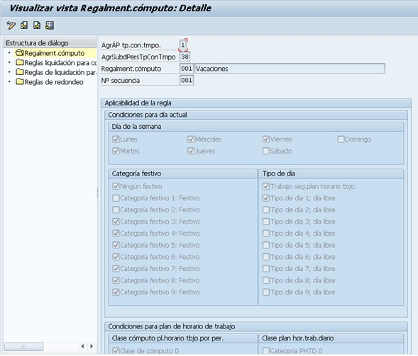
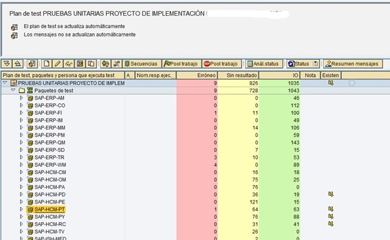
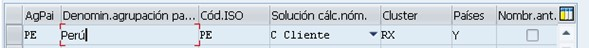

-
MANEJO DE SAP TRANSACCION
/Nnnnn llamar una transaccion en el mismo modo.
/N termina la transaccion actual.
/Onnn abre un modo con la transaccion indicada.
/I sale del modo actual
/O crear modo y muestra todos los modos abiertos
/NEND salir del sistema preguntando si graba datos
/NEX salir del sistema sin preguntar si graba datos
TRANSACCIONES PA03: registro / estado de gestion calculo de nomina controla los pasos de la liquidacion de nomina PA04: registro / estado de gestion calculo de nomina por rangos de numeros PA10: ver datos basicos de personal PA20: ver todos los datos del maestro de empleados PA30: modificar todos los datos del maestro de empleados PA40: medidas del personal PA41: modificar medidas alta / baja PA51: visualizar datos de tiempos (hr306) PA61: actualizar datos de tiempos (hr306) PA70: entrada rapida de entradas de pa (hr306) PA71: entrada de tiempos rapidos (hr306) PE01: esquemas de nomina / editor de esquemas ZCL0 Y ZC00 PE02: crear / modificacion de reglas Documentación de REGLAS DE NOMINA: https://wiki.scn.sap.com/wiki/pages/viewpage.action?pageId=72405 PE03: modificacion de caracteristicas de un esquema ej: modificar caract. ABKRS si se van a usar mensajes de retorno depende de la estructura, la 5 posición es la que con tiene una W o E, así: AFP EARP ECAJAE AFC EAVPVE AFCOEAVPOE PE04: operaciones y funciones del calculo del esquema de nomina PE50: editor plantilla fomularios comprobantes de gestion de tiempos PE51: editor plantilla de remuneracion PO01: actualizar puesto de trabajo PO02: actualiza plan de formacion PO03: actualiza funcion PO04: actualiza tipo de evento PO05: actualiza evento PO06: actualiza lugar PO13: actualiza posiciones / mirar vacantes y funciones PO14: actualiza tareas PM01: crear infotipos de pa PU01: borra resultados de nomina actual PU03: modifica status de nomina PU30: copiar conceptos PDSY: (actualización de documentación hr) accede a la documentación de todos los esquemas, funciones, reglas para el cálculo de la nómina y operaciones. En caso necesario puede crear la documentación para clientes específicos. PM01: creacion de infotipos PPOME: ver / modificar la estructura de la organizacion PC00_M99_CWTR: filtro por empleado por cc nominas
PROGRAMAS RPUMKG00: Programa que activa todas las caracteristicas: RPUDEL20: borra cluster de nomina RPLTIM00: lista control entrada tiempos, muestra una especie de comprobante de tiempos. RPUAUD00: logs de cambios RPDASC00: muestra todo el esquema del programa a traves de la transaccion SE38
COSAS QUE SE UTILIZAN EN SAP EJECUTAR LA CONTABILIZACION Acceso al menú, Menú normal, Recursos humanos, calculo de la nomina, América, Colombia, contabilización en finanzas. TRANSACCION PC00_M99_CIPE programa RPCIPE00 Programa RPCIP_DOCUMENT_ANALYSE, para visualizar las ejecuciones contables de HCM Consultar PCP0 Consulta la contabilización Para cuando no hace la sustitución por la obbh, siempre hay que comentar esta línea en este objeto LACC4F10:
QUITAR ENCABEZADO DE DOCUMENTO EN PCP0 Cuando se este generando el ultimo informe: Se le da el icono de grabar variante, usualmente trae la 1_STD, pero se regraba con un nuevo nombre, y se le quitan los check aquí indicados: Se coloca la nueva variante como valor default y ya con eso.
CLASE DE TRATAMIENTO Y EVALUACION DE CADA CCNOMINA TABLA V_512W_D Las ccnominas que inician por / con acumuladores que no se deben tomar. Las ccnominas que inician por 9 con informativas que eventualmente pueden servir, toca revisar.
ORDEN DEL CLUSTER DE LOS CCNOMINAS 1. RTE (Importe por unidad) Contiene la base de valoración, por lo tanto, en caso de un clase de salario por horas, la tarifa por hora, que se debería multiplicar por la cantidad de horas realizada por el empleado, durante el proceso de cálculo de nómina. • NUM (Cantidad) • AMT (Importe) En el caso de una clave de concepto de nómina de sueldo, por ejemplo, contiene el importe que debe recibir el empleado. CONSULTAR CONCEPTOS CCNOMINA QUE HACEN BASE PC00_M99_DLGA20
CONTABILIDAD CONTABILIZACION SPRO IMG referencia Calculo de nomina Calculo de nomina Colombia Evaluación para la contabilización en finanzas Actividades en sistema HR Agrupación de personal cuentas simbólicas Fijar agrupación de personal determinación de cuentas Cuando ingresas a esta opción elijes “Especif.asignación prop.empleado a agrup.pers.determ.cuentas” Y si tedas cuenta hay no esta definido el centro de costos de este empleado.
CONFIGURACION DE INFOTIPOS PM01 – Caracteristicas del IT
CON CUAL CUENTA ESTA LIGADA CADA CCNOMINA TRANSACCION PC00_M99_DKON
CONTABILIZACION DE LOS CCNOMINAS Para conocer cuales ccnominas se contabilizan se utiliza la tabla V_T52EL_COMP y se le da la fecha 31129999.
REVISION DE GESTION DE TIEMPOS Siempre se debe haber ejecutado la PT60, con el esquema suministrado por el cliente, para que no genere cluster se elige en la opcion “opciones de programa” proceso de test y visualizar log. y en ocaciones toca darle una fecha a la retroactividad obligatoria. O sino no genera cluster. En el log se revisa la selección de ccnominas, en conformacion de saldos RTIP y se consulta la tabla TIP y ahí estan los valores que genera el GWT con M, y se busca la tabla TIP, que es donde se arman los horarios la ‘S’ son los horarios que tiene que trabajar, la ‘M’ son los horarios extra que tuvo que trabajar. *** Se verifica la regla donde se encuentra el problema que no este pagando o este pagando doble el concepto, de acuerdo al analisis de cada regla. Para arreglar se anota el grupo de reglas de selección ejem: 10 y la agrupación diaria ejem: 01 y la regla y luego de va al SPRO, IMG y se sigue la ruta de abajo: PT66 Es revisar el cluster de tiempos.
PERMITIR EVALUACIÓN DE TIEMPOS A FUTURO – PT60 CHECK RPR Activar retroactividad p.cál.nómina colocar despues de la instruccion anterior. CHECK FUT Permitir valoraciones en el futuro
RPUCT300 INDEX ERRROR INDEXADO ACTIVAR FUNCIONES Se corre primero para Tipo de objetos FU, Test OFF, Check en sobrescribir y la el usuario . Se hace después lo mismo para Tipo de objetos OP, Test OFF, Check en sobrescribir y la clave del usuario .
PARA LA PROVISION DE PARAFISCALES Usualmente son conceptos que empiezan por xxxx Las provisiones se cuadran asi: Provision del mes = Nuevo saldo – saldo anterior + pago mes + (pago año).
VERIFICAR PROPIEDADES DE LOS SUBTIPOS VALIDOS PARA CADA INFOTIPO, EJEMPLO DE PRÉSTAMOS Calculo de nomina -> calculo de nomina -< prestamos -> datos maestros V_T591A
COLISIONES DE TIEMPOS O COLISIONES ENTRE INFOTIPOS Para resolver el caso de este empleado: Para este caso en el que se intenta grabar por el it2002 subtipo 0450, presenta colisión con el it2002 subtipo 0400. En este caso se debe tener en cuenta la clase de enlace temporal que tiene el infotipo que se esta intentando grabar, como el infotipo que esta grabado y presenta colisión. A continuación indico los pasos se que efectuaron para que el sistema en lugar de generar un mensaje de error de colisiones, coloque un warning (es una de varias opciones, todas están en la documentación adjunta): Se ingresa por SPRO -> IMG de Implementación -> Gestión de tiempos de personal -> Entrada y Gestión de datos de Tiempos -> Especificar reacciones en caso de superposición de infotipos tiempos Se entra por el infotipo 2002 y la clase de enlace temporal 03 (Que es la relevante para el subtipo 0450), y se selecciona la lupa. En este punto se elije el infotipo y la clase de enlace temporal con el que esta presentando colisión, para este caso it2002 clase 02. Se cambia el indicador de reacción del E (Error) al W (Warning), se graba y se transporta y al intentar grabar el registro, observamos que sale Warning, pero deja continuar para que se pueda grabar el registro normalmente. La solución es solo para este caso, ya que cada colisión depende del manejo de la misma.
ERROR TABLA 510 CONVENIO: Error en valoración indirecta Ingrese al SPRO, IMG, a la ruta: Gestión de personal Gestión de personal Datos de nomina Emol.basicos Áreas personal para regla p.cálculo nómina y reg.convenio Al ingresar digite agrupación de países: 38. Cuando la persona se retira, observamos que el grupo de personal es ”I”, buscamos el área de personal en este caso “N5”, Y se debe definir la agrupación de áreas de personal para Regla de nomina y la agrupación de áreas para regulación por convenio. Que para este caso no esta llena, debe ser configurada y volver a liquidar.
MODIFICAR MEDIDAS DE PERSONAL EJEMPLO B1 REINGRESO SPRO Gestión de personal Gestión de personal Adaptación de procesos de trabajo Medidas Determinar infogrupos Infogrupos Se digita la medida que se quiere modificar, en este caso B1, y se modifica el IT con el infotipo necesario, la operación que se quiera efectuar, copiar, insertar, etc. y el subtipo de ser necesario.
ERROR RETROACTIVIDAD MAS ANTIGUA Entrar al IT0003, y en el campo Per.pers.ant.re digitar la fecha, para este caso se digito 01.01.2006, y ya dejo seguir. Ya que estaba haciendo proceso con el periodo 06 de 2006.
PARA CONOCER EL % PORCENTAJE UTILIZADO EN EL CALCULOS DE VALORACION DE LAS HORAS EXTRAS Se hace seguimiento al esquema para el calculo de la nomina, eso debe ser en alicuotacion y se mira la tabla V_512W_B.
PN-PABRP nro periodo PN-PABRJ ano periodo
PARA VERIFICAR AUTORIZACIONES A LAS TRANSACCIONES Por la SU24 se digita el código de la transacción para ver los permisos: Por ejemplo para la PPOME Se revisan los nombres de los objetos en este caso la P_ORGIN muestra los accesos a cambios de datos maestros, si le damos doble click y modificar, vemos una pantalla similar a la siguiente, indicando cuales campos podemos configurar: Lo importante es saber que por esta pantalla no se modifica NADA, son los valores que va a proponer el sistema cuando ejecutemos la transacción SU01. También tener en cuenta el objeto P_TCODE y PLOG que el la autorización para modificar OM. Otra vista de los campos que contiene es SU24 se elige HR y se da doble click sobre el objeto a mirar Bien, una vez revisados estos parámetros, debemos ingresar a la transacción PFCG, se crea el rol necesario y en la pestaña Menú, se agregan las transacciones a manejar. Luego en la pestaña autorizaciones se configura el perfil, de acuerdo a las autorizaciones que se le dan al perfil. (El perfil es único por rol, el rol si se puede compartir). Luego en la pestaña Usuario se indica que usuarios van a utilizar este rol. Importantísimo Activar los menús, Autorizaciones y usuario (Click en botón Comparar usuario). Para que genere un perfil básico por la PA30 debe tener las autorizaciones basicas así: La siguiente vista no permite modificar el infotipo 8 por la PA30 solo lo ve, pero los otros infotipos si los deja modificar Para modificar ciertos infotipos o por ciertas transacciones como la PA40 se requiere autorizacion de objeto PLOG así: Con estas opciones tiene acceso a todo, de ahí para adelante se configura cada acceso. Para que de solo acceso al infotipo que uno necesite elija el objetos de autorización haga filtro por uno de esos objetos y pruebe. Si se crean dos roles uno para transacción PA30 y que no toque el infotipo 8, y se crea otro rol con la PA40 y que toque el infotipo 8, la autorizacion no funciona, es decir, al tocar los datos maestros, afectan directamente a ambos roles, así no sea la misma transacción. R: lectura de los datos. Siempre debemos colocarla en todos los niveles para que al menos lea la informacion. W: permite insertar, modificar, borrar y desbloquear registros bloqueados. M: Permite al usuario mostrar informacion de consultas, cuando invoca el matchcode de empleados. S: Permite que un usuario ingrese un registro bloqueado y que el mismo usuario no lo pueda desbloquear. E: Permite que un usuario ingrese un registro bloqueado. (Es muy parecido a la S). D: Cuando existe un registro bloqueado, el este usuario lo puede desbloquear. *: Permite todas las autorizaciones. Mas documentación en: http://help.sap.com/saphelp_470/helpdata/es/ef/4aba3b3bf00152e10000000a114084/content.htm Esta es la instrucción clave para dar acceso a los infotipos con autorización P_ORGIN
 Para los objetos de planificación de personal: OM, PD, CM, etc, se valida la tabla T77FC Códigos de función HR-PD
Aparecen los usuarios, es IMPORTANTE DESPUES DE CUALQUIER CAMBIO EJECUTAR el icono Comparar usuario
Existen varias configuraciones que podrían ejecutarse, pero esta es la básica.
Ahora bien, si deseamos conocer a que no tuvo acceso, ejecutamos la transacción por ejemplo la PA30, cuando salga un mensaje de error o no genere información, estando en esa pantalla se le da /Nsu53, y ahí se muestra en rojo a lo que no tuvo autorización.
No es aconsejable colocar el objeto de autorización P_ABAP, ya que tumba la autorización del get pernr.
SU56: verifica el estado de los objetos de autorizacion, si SAPALL esta incluido o no.
Para los objetos de planificación de personal: OM, PD, CM, etc, se valida la tabla T77FC Códigos de función HR-PD
Aparecen los usuarios, es IMPORTANTE DESPUES DE CUALQUIER CAMBIO EJECUTAR el icono Comparar usuario
Existen varias configuraciones que podrían ejecutarse, pero esta es la básica.
Ahora bien, si deseamos conocer a que no tuvo acceso, ejecutamos la transacción por ejemplo la PA30, cuando salga un mensaje de error o no genere información, estando en esa pantalla se le da /Nsu53, y ahí se muestra en rojo a lo que no tuvo autorización.
No es aconsejable colocar el objeto de autorización P_ABAP, ya que tumba la autorización del get pernr.
SU56: verifica el estado de los objetos de autorizacion, si SAPALL esta incluido o no.
PARA PEDIR CAMPOS DEL DYNPRO, OPCIONALES U OBLIGATORIOS EN HCM Ingrese por el SPRO -> Gestión de personal -> Gestión de personal -> Adaptación de las superficies -> Modificar modific.imagen. Se elige el DYNPRO y en la columna Clave variable va el código del país 38 (si la tiene) y doble click y se modifica el campo necesario.
PERFORM QUE LEE LAS CARACTERÍSTICAS PROPUESTA A CADA INFOTIPO PERFORM re549d USING 'ABKRS' '3' t549b_abkrs t549brc. O la FUNCIÓN HR_FEATURE_BACKFIELD
USER EXIT DE TIEMPOS: HRPTIM0*
CAPTURA DE ÁREA Y PERIODO DE NOMINA EN LA SELECTION-SCREEN PARA QUE LA PRIMERA PANTALLA SEA ÁREA Y PERIODO, Y NO FECHA INICIAL Y FINAL La primera opcion siempre debe ser generar una clase de report (la menciono en algun momento). Ahora bien si se quiere por ABAP, se le tiene: IF p_first_screen = 'X' AND pnpbegda IS INITIAL AND pnppernr IS INITIAL AND pnpbukrs IS INITIAL. p_first_screen = ' '. PERFORM first_screen. ENDIF. *&---------------------------------------------------------------------* *& Form FIRST_SCREEN *&---------------------------------------------------------------------* * text *----------------------------------------------------------------------* * --> p1 text * <-- p2 text *----------------------------------------------------------------------* FORM first_screen . LOOP AT SCREEN. IF ( screen-group1 = 'ZB2' OR screen-group1 = 'ZBK' ) AND screen-group2 = 'DBS' AND ( screen-group4 = '091' OR screen-group4 = '093' OR screen-group4 = '095' OR screen-group4 = '099' OR screen-group4 = '101' OR screen-group4 = '105' ). screen-invisible = 1. screen-input = 0. screen-output = 0. screen-active = 0. ENDIF. MODIFY SCREEN. ENDLOOP. LOOP AT SCREEN. IF screen-name = 'PNPXABKR' OR screen-name = 'PNPTIMR9' OR screen-name = 'PNPTIMRA' OR screen-name = 'PNPPABRP' OR screen-name = 'PNPPABRJ' OR screen-name = '%PBLT161_1000'. screen-invisible = 0. screen-input = 1. screen-output = 1. screen-active = 1. ENDIF. IF screen-name = '%FDPE130_1000' OR screen-name = '%FZP1142_1000' OR screen-name = '%FZP2152_1000'. screen-invisible = 0. screen-input = 0. screen-output = 1. screen-active = 1. ENDIF. MODIFY SCREEN. ENDLOOP. Esta es la mejor opcion para ocultar los campos iniciales de la pantalla, de rangos de fechas AT SELECTION-SCREEN OUTPUT. oculta solo rangos pnptbeg = 'Fecha de entrega'. LOOP AT SCREEN. IF screen-group1 = 'ZBK' OR screen-group1 = 'ZB2'. screen-invisible = 1. screen-input = 0. screen-output = 0. screen-active = 0. ENDIF. MODIFY SCREEN. ENDLOOP. LOOP AT SCREEN. IF screen-group1 = 'ZBK' OR screen-group1 = 'ZB2' OR screen-group1 = 'XDA' OR screen-group1 = 'PER' OR screen-group1 = 'XPS'. screen-invisible = 1. screen-input = 0. screen-output = 0. screen-active = 0. ENDIF. MODIFY SCREEN. ENDLOOP. ENDFORM. " FIRST_SCREEN
PARA QUE EN LA SELECTION-SCREEN SOLO PREGUNTE LA FECHA DE INICIO Y FIN DEL PN-BEGDA Y PN-ENDDA Se puede definir una clase de report, o se puede dejar en blanco. LOOP AT SCREEN. IF screen-group1 = 'ZBK' OR screen-group1 = 'ZB2' OR * screen-group1 = 'XDA'. screen-group1 = 'XPS'. screen-input = 0. screen-output = 0. screen-invisible = 1. MODIFY SCREEN. ENDIF. ENDLOOP.
PARA ACTIVAR LA AUDITORIA DE LOS INFOTIPOS Y CAMPOS
PARA ACCEDER A LAS NOTAS SAP - LOGICAMENTE SE DEBE TENER UN USUARIO DE PARTNER https://support.sap.com/en/index.html Cambios legales https://launchpad.support.sap.com/#/legalchangenotification Revisar los support packages en version 608 https://me.sap.com/supportpackage/SAPK-60855INSAPHRCCO https://me.sap.com/swdcproduct/_APP=00200682500000001943&_EVENT=NEXT&HEADER=Y&FUNCTIONBAR=Y&EVENT=TREE&NE=NAVIGATE&ENR=67838200100100012380&V=MAINT&TA=ACTUAL/SAP%20HRCCO
PARA VER A TRAVÉS DE UN REPORTE TODOS LOS INFOTIPOS – RELACION DE INFOTIPOS DEL EMPLEADO POR SE38 Programa RPLINFC0, transacción PC00_M02_LINF0 o S_AHR_61015785
PROGRAMA PARA BORRAR CLUSTER DE TIEMPO B2 Programa RPUP2D10 B2 es siempre. Si consulta por pt66 se observa los datos que se ingresan para borrar: Código empleado, año, periodo y tipo de cluster en campo Clasificacion. BORRAR B1 Programa RPUP1D00 se la CLUSTER B1
DEBUGGIN DEL IT 2000 ETC. CALL FUNCTION 'HR_PROPOSE_OVERTIME_2005'
COMPARACION DE PARAMETRIZACION ENTRE MANDANTES O ENTRE DOS MANDANTES Trx. SCMP Comparacion de tablas únicamente Transacción OY19 Se elige IMG referencia SAP y Crear: La idea es tratar nodos pequeños para que el sistema no se bloquee ni se demore. Luego de elegido el nodo, click en botón verde arriba . En conexión R/3 elegimos el mandante con el k vamos a comparar y luego. Dar descripción y elegir Pide numero de mandante, usuario y clave del mandante a comparar.
AGREGAR INFOSET DE TIEMPOS A ADOC QUERY Ingresamos a la SQ01 para revisar en cual grupo de usuarios esta: Usualmente /SAPQUERY/H2 Otra trx. Para hacer querys SQVI QuickViewer Ingresamos a SQ03 y elegimos los siguientes: /SAPQUERY/HR_XX_PT_11 Presencias /SAPQUERY/HR_XX_PT_12 Absentismos /SAPQUERY/HR_XX_PT_17 Hechos temporales En esta parte: Le damos click en modificar y lo agregamos en /SAPQUERY/H2 gestión de personal Luego ingresar por SQ01 y damos click en INFOSET QUERY y aparece escojemos los querys /SAPQUERY/HR_XX_PT_11 y a partir de eso se crea el nuevo query con su respectivo nombre que se quiera y ya aparece en la S_PH0_48000510 - Ad-hoc-Query
INFOSETS, AGREGAR UN INFOTIPO A UN ADHOC QUERY POR INFOSET SQ02: transportar cuando ya no pide orden: Break en SE38 RSAQDEVC linea 490 call method iref->corr_insert_infoset Ahi se encuentra la OT con el nro liberar. Ingresa por la opción Recursos Humanos Sistema de información Opciones Parametrizaciones actuales S_AHR_61010454 - Query SAP: Actualizar InfoSet, O SQ02 Se llama el Z* Definido… para agregar una tabla 9*, por el Menú Tratar Modificar selección de Infotipos, luego se pasa para el lado derecho de la pantalla, creando un grupo de campos.
TRATAMIENTO DE INFOSETS Los infosets deben ser modificados en el mandante de configuración K o Workbech, ya que si se necesitan crear campos debe permitir hacerlo, los campos se pueden adicionar para k el usuario los utilice en el adhoc query, también se pueden crear campos por workbench. Recordar que en el icono Detalles se encuentran las partes del programa que se deben utilizar…. Todo se graba y debe ser transportado a PRD.
TRATAMIENTO DE ADHOC QUERYS Se crea el adhoc query en el mandante deseado, si se necesita transportar eso es un camello pero se puede hace, buscar en este documento el titulo TRANSPORTE DE ADHOC QUERYS … entonces para crear el adhoc se ingresa a la transacción S_PH0_48000513 - Ad-hoc-Query, por ahí se crea el adhoc común y corriente tanto de los campos de selección como de salida, inclusive en los campos de selección se pueden grabar valores predeterminados. Para mejorar la utilidad del adhoc es mejor ligarle una transacción, para ello se ingresa a la transacción se93 y se graba con parámetros, para ello es mejor mirar una ya echa por SAP, por ejemplo la S_PH0_48000450 - Resumen fechas D_SREPOVARI-REPORT: es el código del grupo de usuarios, la G final indica que es de ámbito global. Ejemplo: /SAPQUERY/HTG D_SREPOVARI-EXTDREPORT: nombre del query. Ejemplo ZQCO_PT_012 Luego se pega en el menú SAP por la se43. Para corregir inconsistencias por nombres de campos de selección o hacerle mejoras de algun tipo se ingresa a la transacción SQ01, alli se trata el adhoc. En cierta ocacion molesto por que al ejecutar la transacción tenia error al buscar la variante STÁNDAR, si es necesario se puede borrar, el problema es k al compilar el adhoc query vuelve y lo genera.
CREAR TRANSPORTE DE ADHOC QUERYS Se crean los querys en el mandante Workbench, el sistema pregunta la orden de transporte. Siempre crearlo como de ámbito global. Transacción SQ01 Se elige el grupo de usuarios (Para tiempos /SAPQUERY/HT) Se seleccionan los campos de selección y lista Se graba el query. El paquete se llama /SAPQUERY/HR buscarlo a ver si existe. Se devuelve a la transacción SQ01, se ejecuta y mejora los necesario a través de la opción modificar. Lo que es complicado es crear el query en mandate DEV de pruebas y transportarlo, eso si es como se indica a continuación, pero toca con truco y SAP ALL.
ERROR DE TIEMPOS POR FALTA DE HORAS EN EL INFOTIPO 0008 EMOLUMENTOS BÁSICOS División por cero no se ha realizado
TABLA V_T512Z MUESTRA LA ADMISIBILIDAD DE LOS CCNOMINAS EN UN INFOTIPO Cuando no funciona, lo k se debe hacer es entrar por la sm30 a esa tabla y a la v_t511, en ultimas se borra el concepto y se vuelve a crear
CABECERA DE INFOTIPOS TITULO DEL DYNPRO PA20, PA30, PT50 Hay una ruta, pero no es la unica : Fijar informaciones de cabecera 1. Introduzca (bajo la entrada Cabecera de dynpro 05) el modificador de cabecera que desee utilizar. Tenga en cuenta que para el resumen de contingente PT50 deberá utilizar la cabecera de dynpro 05. Ejemplo:
Crear variante para resumen de presencias/absentismos: RPTABS20 Crear variantes p.vista calendario dat.presencia/absentismo: RPTABS50 Crear variante para evaluación de tiempos: RPTIME00 Crear variante para extrapolación: RPTIME00 Crear variante p.resumen gráfico de presencias/absentismo: RPTLEA40 Crear variante p.report generación contingente absentismos: RPTQTA00 Revisar configuracion RPTQUOTA_CHECK Crear variante para información contingente de absentismos: RPTQTA10 Actualizar característica LLREP
LIMPIAR LOS EMPLEADOS DE BLOQUEO, PARA COLOCAR EL REGISTRO DE GESTION EN FIN DE CALCULO, STATUS DE NOMINA IT0003, MODIFICA FECHA DE MODIFICACION STATUS NOMINA Y TIEMPOS STATUS TIEMPOS – STATUS GESTION Programa RPUTRBK0 – PU03
Para gestión de tiempos y nomina, Deja cambiar datos anteriores a la salida en vivo, para el ejemplo la salida en vivo es el 01.01.2018 Para que no deje modificar nada antes de la salida en vivo Cambiar fechas de Per.pers.ant.retr. y Retroactividad CDP
TRANSACCION COPIAR CCNOMINAS O GENERAR CCNOMINA NUEVA Transaccion OH11, verificar propiedades, tratamiento por SM30 tabla V_512W_D
CONTABILIZAR – CONTABILIZACIÓN PROGRAMA RPCIPE00 En la tabla PCALAC deja el registro de si la secuencia de CLUSTER fue contabilizado. La tabla BKPF, trae el encabezado del documento contable. La tabla BSEG, trae el cuerpo del documento contable y cambia por cada línea El programa ZRGGBS000 es un Z que se utiliza para modificar cosas antes de contabilizar.
PARA DEBUG DE LAS PROVISIONES DE LA NOMINA COLOMBIA Programa: HCOCALC0 Include: PCPROCO0 CALL FUNCTION it_t7co22-mfunc Aqui hace el llamado a todas las funciones de las provisones
ESTADOS REGISTRO DE GESTION EN EL AREA DE NOMINA - PA03 Tabla T569V tiene los estados que maneja el registro de gestión por area de nomina
CORRESPONDENCIA – MAILMERGE SAP Y WORD Pasos: 1. Tener el documento Word final con la carreta que se va a crear e identificar los campos variables. Recordar que la fecha del dia puede ser insertada, y la fecha de SAP dd.mm.aaaa a través de formato se puede adaptar para que se ejemplo: 25 de marzo de 2010 por una de la opciones de salida de Word. 2. Crear Query en SAP Ejecutar Query la primera vez, e indicar “Tratamiento de textos” usualmente este icono “Tratamiento de textos” Tratamiento de cartas tipo con MS Word Indicamos Luego Doc. Wor nuevo Sin clave acceso
 3. Nos sale undocumento Word nuevo con el mensaje “Insertar los campos de carta tipo”
4. Se inserta la carreta que va en el documento por la opción “Insertar campo combinado” así:
5. Para verificar como va quedando el documento se da la opción vista previa de resultados así:
y con el siguiente icono se va revisando como va quedando
6. Cuando estamos seguros que quedo bien, grabamos la plantilla y salimos del documento.
7. Ahora, para volver a probar, ejecutamos nuevamente el Query, pero esta vez indicamos el nombre del archivo en Word así:
“Tratamiento de textos” Tratamiento de cartas tipo con MS Word
Luego Doc. Wor existente Sin clave acceso
8. Nos pide el nombre de la plantilla guardada, y se puede iniciar la correspondencia respectiva.
Para acceder a cambiar el formato fecha se puede de 2 formas:
• De da editar sobre el campo, se elije la categoría date con el formato a imprimir, luego se da click sobre el botón Codigos de campo y se agrega la palabra MERGEFIELD “Nombre del campo” luego grabar y se prueba nuevamente, queda similar a MERGEFIELD “ffinal” \@ "dddd, dd' de 'MMMM' de 'yyyy".
El problema es k si se vuelve a consultar se pierde el formato y toca volver a hacerlo, por eso es mejor darle Alt+F9.
• Para editar la fecha en la carta Word, nos unicamos en el campo: ejemplo {pn-begda}, en el Word se digita Alt+F9 aparece por ejemplo {MERGEFIELD pn-begda} lo que se hace es modificar el formato de salida así: {MERGEFIELD “pn-begda” \@ “dd MMMM yyyy”} se vuelve y se digita Alt+F9, se graba la plantilla y se prueba nuevamente.
3. Nos sale undocumento Word nuevo con el mensaje “Insertar los campos de carta tipo”
4. Se inserta la carreta que va en el documento por la opción “Insertar campo combinado” así:
5. Para verificar como va quedando el documento se da la opción vista previa de resultados así:
y con el siguiente icono se va revisando como va quedando
6. Cuando estamos seguros que quedo bien, grabamos la plantilla y salimos del documento.
7. Ahora, para volver a probar, ejecutamos nuevamente el Query, pero esta vez indicamos el nombre del archivo en Word así:
“Tratamiento de textos” Tratamiento de cartas tipo con MS Word
Luego Doc. Wor existente Sin clave acceso
8. Nos pide el nombre de la plantilla guardada, y se puede iniciar la correspondencia respectiva.
Para acceder a cambiar el formato fecha se puede de 2 formas:
• De da editar sobre el campo, se elije la categoría date con el formato a imprimir, luego se da click sobre el botón Codigos de campo y se agrega la palabra MERGEFIELD “Nombre del campo” luego grabar y se prueba nuevamente, queda similar a MERGEFIELD “ffinal” \@ "dddd, dd' de 'MMMM' de 'yyyy".
El problema es k si se vuelve a consultar se pierde el formato y toca volver a hacerlo, por eso es mejor darle Alt+F9.
• Para editar la fecha en la carta Word, nos unicamos en el campo: ejemplo {pn-begda}, en el Word se digita Alt+F9 aparece por ejemplo {MERGEFIELD pn-begda} lo que se hace es modificar el formato de salida así: {MERGEFIELD “pn-begda” \@ “dd MMMM yyyy”} se vuelve y se digita Alt+F9, se graba la plantilla y se prueba nuevamente.
COMO CANCELAR UN PRESTAMO EN SAP Se hizo una prueba y se determinó que el procedimiento es el siguiente: A. Se selecciona el préstamo que se desea suspender. B. Se selecciona la función COPIAR. C. Se ingresa la fecha inicial y fecha final del tiempo de suspensión NOTA: la fecha inicial obligatoriamente debe corresponder a la fecha inicial de un periodo de nómina; la fecha final obligatoriamente debe ser la fecha final de un periodo de nómina. D. Se debe eliminar la cuota de amortización. E. Se debe eliminar el interés. F. Se deben eliminar los comprometidos. G. Finalmente se debe grabar la modificación Al finalizar el proceso, el préstamo debe quedar dividido en tres partes: Primera parte: préstamo con descuento Segunda parte: préstamo sin descuentos Tercera parte: préstamo con descuento
RUTA DEL CUSTOMIZING PARA ACTUALIZAR CIUDADES Y DEPARTAMENTOS Gestión financiera (nuevo) -> Parametrizaciones básicas de gestión financiera (nuevo) -> Impuesto sobre el volumen de negocios -> Parametrizaciones básicas -> Códigos fiscales de provincia -> Almacenar códigos fiscales provinciales para Italia, Colombia y España Por SM30 Tabla: V_T005P
CAMBIAR EL NOMBRE DEL TEXTO DEL CAMPO DEL DYNPRO, LOS ELEMENTOS DE TEXTOS, MODIFICAR TEXTOS DYNPRO Tabla DDFTX crear vista ZPTV103 indicando tabla, no pide orden, toca ejecutarlas en cada mandante, nombre del campo e idioma, ejemplo: P2001 LFZED y S. y activar nuevamente por SE51. Es importante activar también el dynpro 3000. Tabla: DD04T crear una vista de la tabla ZPTV101, no pide orden, toca ejecutarlas en cada mandante, tiene los nombres de los textos que salen en el infotipo y dynpro. Lo que hice fue pero no pide orden de transporte y modifica en algunos lados. • Por SM30 en la vista ZPTV101 por campo actualizar LFZED ES y REFNR ES (Puede no existir) • Por SM30 en la vista ZPTV103 por campo P2001 LFZED S colocar los mismos textos de DEV: Fecha Inc. Fecha Inicial Incap. Fecha Inicial Incap. Fecha Inicial Incapacidad Original • Por SM30 en la vista ZPTV103 por campo P2001 REFNR S colocar los mismos textos de DEV: Nro.Doc. Numero Documento Numero Documento Entidad Numero Doc. Numero Documento Entidad • Activar por SE51 mp200000 por 2008 y por 3000 TABLA DE TEXTOS DE LOS ELEMENTOS DE DATOS: DD04T Ahora bien, el dynpro tiene el objeto creado con el tipo texto, por ejemplo por la tabla anterior se cambia el texto de p0006-state, pero por la SE51 veremos el texto igual. (Este paso no es necesario) Para ello se debe actualizar la tabla: D021T tampoco encontré vista, por lo que se puede crear o pegarle a la tabla directamente (ZV_TEXT_FIELD_DY). Para ello se ingresa: nombre del programa dynpro, el nro del dynpro, el idioma y el nombre del campo: ejemplo: p0006-state. Luego se intenta activar el dynpro por la se51, se reingresa por la transacción PA20 o PA30 y ya queda.
AGREGAR LINEA EN PARA REVISAR LAS COLISIONES ENTRE INFOTIPOS – ENLACE TEMPORAL V_T554Y
CONOCER CONTINGENTE CONSUMIDO POR EL INFOTIPO 2001 a 2006 Básicamente a través del campo DOCNR se busca ese numero en la tabla PTQUODED, este contiene el campo QUONR, y el contenido de este campo se busca en el IT2006. * Variables contingentes DATA: int_days_cont TYPE ptmab_q_splits_for_docnr OCCURS 0 WITH HEADER LINE. DATA: zquota_split_tab LIKE tmab_quota_info OCCURS 0 WITH HEADER LINE. * Funcion de desglose de vacaciones. SORT i2001 BY begda vtken DESCENDING beguz. PERFORM quota_split TABLES p2001 USING 'X' CHANGING int_days_cont[]. * funciona LOOP AT int_days_cont. zquota_split[] = int_days_cont-quota_split_tab[]. ENDLOOP. *---------------------------------------------------------------------* * Reads deduction information for absences in P2001 and * determines the split table which is later used to evaluate * T554A (see form QUOTA_VALUATION) *---------------------------------------------------------------------* FORM quota_split TABLES p2001 STRUCTURE p2001 USING parm3 LIKE as-parm3 CHANGING quota_splits_for_docnr_tab TYPE ptmab_q_splits_for_docnr_tab. CLEAR quota_splits_for_docnr_tab. CALL FUNCTION 'HR_QUOTA_SPLITS_FOR_ABSENCE' EXPORTING split_parm = parm3 TABLES i2001 = p2001 CHANGING quota_splits_for_docnr_tab = quota_splits_for_docnr_tab EXCEPTIONS quotas_incomplete = 1. * others = 2. * since function module reads IT2006 via logical data base, there * may have been an authority problem * if sy-subrc = 1 and pnp-sw-auth-skipped-record = '1'. * perform errlog_pab_no_auth_2006(h99plog0) tables error_ptext. * perform errors tables error_ptext. * elseif sy-subrc = 1. * perform errlog_pab_no_2006(h99plog0) tables error_ptext. * perform errors tables error_ptext. * endif. ENDFORM. "quota_split
CONOCER EL CONTINGENTE CONSUMIDO 2001 - 2006 HR_QUOTAS_DEDUCTED_BY_DOCNR
CONSULTAR TODAS LAS TRANSACCIONES DE HR Reporte RPDTRA00
PERMITIR CALCULO DE NOMINA SIN MODIFICAR PA03 Tabla T000 para dejar el mandante como Test y deje modificar, para hacer calculo de nomina sin que pida modificar registro de gestión, se comentarea la línea: CHECK ABR * Verificación mediante, que se encuentra en el esquema de calculo, en el subesquema inicialización Nomina.
PARA AJUSTAR DYNPRO MP200000 CON 2450 PARA EL INFOTIPO 2010 RECIBOS DE SALARIOS. El ajuste de los campos del dynpro se efectúa en la vista V_T588M de la SM30, ya que por adaptación de superficies no permite. Se elige MP200000 y luego 2450.
NECESIDADES DE LA PP61 – PROPUESTA DE NECESIDADES Revisar Customizing, en la parte de planificación de turnos… Básicamente la propuesta con SAP_1 funciona... Active SAP_2 con estas opciones y funciona bien… Se crean las necesidades por la transacción PP67 – Crear Y con el icono se crea la propuesta automáticamente para todos los empleados, Pero si se quiere mas personalizado… se elige un empleado luego una asignación en la parte inferior y se da el icono y solo se le asigna a esta persona… Se puede jugar con la opciones de esta ventana, pero la mostrada es la k adapta todo el horario a la persona.
CONTROLAR LA FECHA DE LA PRIMERA EVALUACIÓN DE TIEMPOS - PT60 SIN NECESIDAD DE CARGAR IT0019 Y DEJAR LA FECHA ORIGINAL DEL IT0041 CON CLASE 25 En la la tabla V_T569R por el código 02 Evaluación de tiempos, cree una clave 90, en la cual se debe colocar la fecha de salida en vivo, eventualmente puede uno crear para cada país esa fecha nunca podrá ser modificada. En el cliente texmoda en el INCLUDE LRPPDF70 - RPTIME00 se encuentra la ampliación.
PARA LA PRIMERA EVALUACIÓN DE TIEMPOS PARA SOLO CONTINGENTES - PT60: Se copia el esquema TQTA como ZQTA: Importante colocar en este esquema la regla ZMON. Se llena con las siguientes líneas: CHECK NEG Toma solo empleados con status 9 SIN CHECK NEG Toma solo empleados con status 1 En la norma de generación de contingente se indica el el subtipo del infotipo 0019 que servirá como fecha de inicio para la acumulación de contingentes. En el it0019 con subtipo 90, de cada empleado debe haber un registro con la fecha de inicio de acumulación, ejemplo: Recordar que el calculo de acumulación lo hace para los empleados así: Dias de derecho al año / numero de dias naturales = acumulado contingente, luego valida con el derecho máximo. Ejemplo: 15 (dias de derecho al año) / 183 dias naturales (10/04/2010 - 09/10/2010) = 0,08196721 Por lo tanto eso es lo k acumula para que de exactamente 15. Como derecho máximo se coloco: 0,08219 Después de ejecutar este esquema para la salida en vivo, Ajustar la tabla V_T569R con tipo de retroactividad 02 para que quede con la fecha de salida en vivo, una vez efectuada la liquidación de tiempos con esquema ZQTA, esto para que no se ejecute la evaluación de tiempos antes de la fecha de salida en vivo (01.11.2010).
PARA QUE EL SISTEMA PERMITA CONTINGENTES NEGATIVOS AL INGRESAR EN IT 2001 Ingresar el valor a permitir en el tipo Se debe ingresar a la tabla T556C por SM30, ubicar la regla de computo: y en la regla de liquidación, llenar el segundo campo > derecho colocar la misma regla de hasta derecho a:
PARA EL MANEJO DEL AJUSTE DEL CONTINGENTE P2006 LAS VACACIONES SE DEBE DIFERENCIAR ENTRE SI SE DEBE AUMENTAR O DISMINUIR: • Si se deben aumentar, se debe ingresar en al infotipo 2006 con subtipo 91 Ajuste + Vacac. 30 dias. o El campo cantidad estará habilitado para ingresar la cantidad a ajustar, se debe indicar una fecha reciente, pero no es problema, ya que la configuración permitirá que siempre se consuma este contingente primero que el 90 Vacaciones 30 dias o La configuración que hace que o Primero se agote el contingente 91 es: o Eso aumenta automaticamente, no sera necesario evaluar tiempos, para ver mas configuracion mirar cliente Textmoda. o NOTA: El motivo por el cual no funciona ingresar valores en el IT2013 es porque la norma, indica que se genera maximo un valor de contingente, para el ejemplo 30 y así yo aumente, el sistema nunca pasara de ahí. • Si se deben disminuir, se ingresa al IT2013, por el subtipo 91 (O a la PT50 y tomar el dia que se quiera ajustar). o Se ingresa la cantidad a disminuir en ese año. o Se escoje la opción reducir, y se evalua tiempos, con eso ya se ajusta el contingente final de ese año.
CALCULO VACACIONES PARA QUE TOME DIAS CONTINGENTE PARA EMPLEADOS LUNES A VIERNES Y LUNES A SÁBADO 2006 
CALCULO DE DIAS IT2006 PARA CARGUE INICIAL - VACACIONES • En la tabla V_T569R por el tipo 02 Evaluación tiempos se configura para el cargue: o Para el modif 01 con fecha 01.01.2000 o Se crea un modif 90 con el dia de salida en vivo o fecha de cargue para pruebas. es decir el dia 01 del mes. • En el include LRPPDF70 del programa RPTIME00 se efectúa una ampliación: ENHANCEMENT 1 ZENHHCM_RPTIME00_02. "active version """""""""""""""""""""""""""""""""""""""""""""""""""""""""""""""""""""""""""""""""""""""""""""$"$\SE:(18) Forma RE569R, Inicio, Ampliación ZENHHCM_RPTIME00_02, Inicio A ** Ampliacion en el include LRPPDF70 al inicio del FORM RE569R ** Para que a partir de la tabla V_T569R con clave 02 y subtipo 90 Fecha salida en vivo ** Permita la acumulacion del periodo unicamente sobre la salida en vivo. IF re_pvrrt = '02'. DATA: gv_molga TYPE molga. GET PARAMETER ID 'MOL' FIELD gv_molga. IF gv_molga = 'PE'. "Unicamente para peru SELECT SINGLE * FROM t569r WHERE modif EQ '90' AND pvrrt EQ re_pvrrt. IF sy-subrc NE 0. "keine RR-Tiefe angeben ->initial CLEAR t569r. ENDIF. DATA: ti_p0041 TYPE STANDARD TABLE OF p0041, gv_fecinicontrol TYPE begda, gv_rrdat TYPE begda, gv_siencontro TYPE c, BEGIN OF var0041, dar LIKE p0041-dar01, dat LIKE p0041-dat01, END OF var0041. CLEAR: gv_siencontro. ti_p0041[] = p0041[]. gv_rrdat = t569r-rrdat. DO 10 TIMES VARYING var0041-dar FROM p0041-dar01 NEXT p0041-dar02 VARYING var0041-dat FROM p0041-dat01 NEXT p0041-dat02. IF var0041-dar EQ '25'. IF var0041-dat => t569r-rrdat. "Si es Mayor o igual a la salida en Vivo, no haga nada ELSE. t569r-rrdat = var0041-dat. t569r-rrdat(4) = gv_rrdat(4). IF t569r-rrdat > gv_rrdat. t569r-rrdat(4) = t569r-rrdat(4) - 1. ENDIF. gv_siencontro = abap_true. EXIT. ENDIF. ENDIF. ENDDO. IF gv_siencontro = abap_true. EXIT. ENDIF. ENDIF. ENDIF. """""""""""""""""""""""""""""""""""""""""""""""""""""""""""""""""""""""""""""""""""""""""""""$"$\SE:(20) Forma RE569R, Inicio, Ampliación ZENHHCM_RPTIME00_02, Final A ENDENHANCEMENT. • De igual forma hay que efectuar esta ampliación en el programa SAPLRPRR INCLUDE LRPRRF04 para que permita limitar los contingente del it2006: ENHANCEMENT 1 . *** Ampliación en el programa SAPLRPRR include LRPRRF04 Al inicio del FORM CHECK_TWM_TIME *** para que en tiempos deje limitar los registros antes de la fecha S.en.vivo HRP IF P_MOLGA = 'PE' AND ( SY-TCODE = 'PA30' OR SY-TCODE = 'PA40' ). DATA: GV_RRDAT TYPE BEGDA. SELECT SINGLE RRDAT INTO GV_RRDAT FROM T569R WHERE MODIF = '90' AND PVRRT = '02'. IF GV_RRDAT IS NOT INITIAL. IF P_RETRO_DATE < GV_RRDAT. P_RETRO_DATE = GV_RRDAT. ENDIF. ENDIF. ENDIF. ENDENHANCEMENT. • En la tabla V_556A_B, el contingente debe estar en la opción Aumentar. • Se ejecuta la PT60 con retroactividad un año atrás a la fecha de corte o salida en vivo y el ESQUEMA ZQTA. • Se efectúan los ajustes correspondientes hasta que no salgan errores al liquidar tiempos. Después de ejecutar la PT60 • Se habilita en la tabla V_556A_B, el contingente para que permita ingresar cantidad, es decir se deja en Sin generar. • Se ejecuta programa de cargue: solo se ingresan los registros de periodos anteriores y la cantidad que estén pendientes por tomar del empleado. Programa ZHCM_TMS_BI2006 en Texmoda • Se efectúan los ajustes correspondientes hasta que se carguen. • Después del cargue de registro IT2006, En la tabla V_556A_B, el contingente debe estar en la opción Aumentar. • Por ultimo en la tabla: • En la tabla V_T569R por el tipo 02 Evaluación tiempos se configura para el cargue: o Para el modif 01 con el dia anterior a la fecha de salida en vivo. o Se crea un modif 90 con fecha de salida en vivo o fecha de cargue para pruebas. • Ejecutar programa RPUTRBK0 para que con fecha PDC Recalculation quede con la fecha de salida en vivo. Recordar quitar check de Test. • Es importante que en la tabla V_T582A el infotipo 2001 y 2006 se quite el check del campo Actual.pas.adm. este campo debe ir en blanco para que al limitar IT 2006 en retiro, genera error.
VARIABLE DE DEBUG DE VACACIONES EN CALCULO DE NOMINA SIM_VAC: Cuando esta en X esta haciendo la simulación del calculo de nomina para los periodos de vacaciones.
PARA QUE EN RETRO NO RECALCULE, PORQUE DEVUELVE LOS VALORES YA CALCULADOS DE LA SEGURIDAD SOCIAL IF gl_no_calc NE pco00_check.
GENERACIÓN DE PRUEBAS EN CON STWB_2 - Gestión plan de test EJECUCION DE LAS PRUEBAS DOCUMENTADAS STWB_WORK - Usuario q.ejecuta test pool trabajo
ASIGNACIÓN DE PERFIL PTMW A USUARIO La asignación de un perfil a un usuario puede llevarse a cabo de dos maneras: • mediante Crear transacción de parámetros, que el usuario incluye en una función; • a través del parametro de usuario PT_TMW_PROFILE. Si no desea asignar un perfil a un usuario a través de una función, hagalo a través del parámetro de usuario PT_TMW_PROFILE. Si un usuario, al que no se ha asignado ningún perfil a través de función o a través de parámetro de usuario, llama al Puesto de trabajo de gestión de tiempos, debe seleccionarse un perfil de la ventana de diálogo. El perfil que aquí se seleccione se introducirá en el sistema como su parámetro de usuario. El administrador de tiempos puede actualizar el parámetro de usuario a través del menú: Sistema -> Valores prefijados -> Datos propios -> Parámetro. Aquí introduce PT_TMW_PROFILE en Parámetro y la denominación de perfil en Valor. Cuando un usuario tiene asignado un perfil a través de una función y a través de los parámetros de usuario, los datos de la función prevalecen sobre los parámetros de usuario. Tan pronto como tiene lugar la asignación de usuario, el administrador de tiempos puede llamar al puesto de trabajo de gestión de tiempos automáticamente con el perfil que contiene toda la información relevante y los ámbitos de función requeridos. Notas En el sistema estándar, SAP incorpora tres perfiles con sus correspondientes transacciones de parámetros: Perfil Transacción de parámetro SAP_XX_TIME_ADMIN PTMW_TIME_ADMIN (administrar indicaciones horarias) SAP_XX_TIME_AD_GRP PTMW_TIME_ADMIN_GRP (administrar indicaciones horarias para grupos) SAP_XX_WORKLIST PTMW_WORKLIST (tratar mensajes) Ejemplo: SAP_US_TIME_ADMIN SAP_38_TIME_ADMIN
MANEJO DEL SERVIDOR SOLMAN SOLAR01 Plano empresarial: para ingresar la estructura de que se va a manejar de configuración y de transacciones. Ejemplo: Dentro de Unidades organizativas, en la pestaña estructura se incluyen las pestañas a manejar. Otro caso: En este ejemplo dentro de planes horario de trabajo, se colocar las transacciones de configuración en la pestaña configuración. Las transacciones del menú Easy-access que prueba el usuario en la pestaña transacciones: Toda la configuración y documentación del consultor siempre se ejecuta desde la transacción SOLAR02 ya que esta es la transacción donde se lleva el registro de las actividades efectuadas. Ejemplo: La documentación proyectos sobre la carpeta proyectos de la raíz. Ejemplo: En la pestaña gestión se colocan las fechas programadas y reales (Es mejor alimentarlos del Project, ya que este no maneja festivos ni fines de semana). Ejemplo: Para validar las pruebas unitarias o integrales: Se graba el catalogo por STWB_1 - Gestión de catálogo de test, no se como funciona. Para que un usuario lo pueda ver, se ejecuta la primera vez la transacción STWB_2 - Gestión plan de test: Si no aparece nada, se da click en gestión de favoritos. Toda la información siguiente siempre en blanco: Luego el signo + , luego reloj , ahí deben aparecer los catalogos cargados, escojemos el que nos corresponda, ejemplo: Una vez grabado y adicionado en el primer menú. Damos doble click en para elegir el proyecto que se carga en la parte de arriba. A continuación damos click en icono Paquetes de test . Ahí aparecen todos los proyectos, pero elegimos solo el de nosotros, ejemplo: Damos click en el icono asignación de responsables. y agregamos el usuario al modulo respectivo. Una vez hecho lo anterior, ya se puede ejecutar la transacción STWB_WORK - Usuario q.ejecuta test pool trabajo, en donde le aparecen las transacciones que debe probar el usuario, en el icono ejecutar invoca el servidor de pruebas, pero previamente alguien lo debió configurar. Ejemplo: Una vez cargadas todas las transacciones que debe probar el usuario, y si se requiere adicionar mas se debe: - Agregar la transacción por SOLAR02 - Ingresar por STWB_2 - Gestión plan de test 1. Dar click en para seleccionar el proyecto y quede en la parte de arriba. 2. Se da lápiz para modificar 3. Se despliega todo el árbol, y se marca con Check la nueva transacción adicionada, y se genera. 4. Nos devolvemos de la opción si salirnos y damos click en el icono paquetes de test . 5. Se elije el respectivo modulo dando click sobre el modulo. 6. Se da lápiz y se genera. Ejemplo:  Y ya debe aparecer dentro de los escenarios de pruebas.
ERROR EN LA PLANIFICACIÓN DE TURNOS – PP61 CUANDO SE DE CLICK DERECHO SOBRE LA MALLA Y SE SALGA DEL PROGRAMA: Aplicar la nota SAP: 1427652
CONOCER A QUE OBJETOS DE AUTORIZACIÓN – ROLES – PERMISOS TENEMOS AUTORIZACIÓN Trx. SUIM
CREAR ATRIBUTOS EN EL INFOTIPO 1222 DE OM Tabla T77OMATTR Se crea a través del escenario PT que es el subtipo 0002, y se le crea en atributo y también en atributo/escenario. En la carpeta Tipos objetos: se indica el escenario, el atributo y el tipo de objeto, en este caso S si quiero que salga en la posición.
Transaccion SOST Cuando uno envía un correo, en esta transacción se puede ver el correo y enviarlo inmediatamente sin esperar que el servidor lo envie al respectivo destinatario.
QUITAR EDITOR WORD / COLOCAR EDITOR WORD DE SMARTFORMS Transacción i18n y se escoje la ruta: Menú I18N Customizing I18N MS Word como Editor y se quita o pone smartforms
PARA CREAR LOS FESTIVOS IRREGULARES EN CALENDARIO DE FESTIVOS Ascencion del señor: Distancia de pascua, dias después de pascua 43. Corpus christi: Distancia de pascua, dias después de pascua 64. Sagrado corazon: Distancia de pascua, dias después de pascua 71.
AMPLIACION PARA COLOCAR CAMBIO DE MEDIDA EN LA TABLE CONTROL DE LA PA40 En el FORM new_pernr del Include MP50AF00 """""""""""""""""""""""""""""""""""""""""""""""""""""""""""""""""""""""""""""""""""""""""""""$"$\SE:(1) Forma NEW_PERNR, Inicio A *$*$-Start: (1)---------------------------------------------------------------------------------$*$* ENHANCEMENT 1 ZAHCM_PA40. "active version * Esta ampliacion, permite que si se esta ejecutando un BI se pueda tomar el codigo de la medida * del menu de PA40 y colocarlo en la primera posicion. * Caso se trata en el programa ZRHCMPA_TERMCONTR - H.RAMIREZ29 24/OCT/2011 DATA: lc_massn_bi_tc(2) TYPE c. DATA: BEGIN OF lt_massntab. INCLUDE STRUCTURE massntab. DATA: END OF lt_massntab. IMPORT lc_massn_bi_tc TO lc_massn_bi_tc FROM MEMORY ID 'lc_massn_bi_tc '. IF lc_massn_bi_tc IS NOT INITIAL. LOOP AT massntab INTO lt_massntab WHERE massn = lc_massn_bi_tc. ENDLOOP. IF sy-subrc = '0'. LOOP AT massntab. MOVE-CORRESPONDING lt_massntab TO massntab. MODIFY massntab. EXIT. ENDLOOP. ENDIF. ENDIF. FREE MEMORY ID lc_massn_bi_tc. ENDENHANCEMENT. Desde el programa origen se envía el valor de lc_massn_bi_tc, que se encuentra en el menú de la PA40. Ejemplo: lc_massn_bi_tc = ‘ZM’. “Medida de retiro. EXPORT lc_massn_bi_tc FROM lc_massn_bi_tc TO MEMORY ID 'lc_massn_bi_tc '. NOTA: Siempre se debe inicializar esta constante en memoria, para evitar que se quede pegado con ese valor, por lo tanto al inicio del programa, y al terminar el BI se coloca: CLEAR: lc_massn_bi_tc. EXPORT lc_massn_bi_tc TO MEMORY ID 'lc_massn_bi_tc'.
TABLA DONDE SE ENCUENTRA LA DESCRIPCION VERBAL 1002 HRT1002 con la vista HRV1002A se puede leer con la función RH_OBJECT_DESCRIPTION_READ HRP1000 se puede leer con la función RH_READ_OBJECT gv_plvar TYPE plvar, CALL FUNCTION 'RH_INTEGRATION_CHECK' IMPORTING integrated_plvar = gv_plvar EXCEPTIONS OTHERS = 1. CALL FUNCTION 'RH_READ_OBJECT' EXPORTING plvar = gv_plvar otype = 'O' objid = p0001-orgeh realo = ' ' istat = ' ' begda = pn-begda endda = pn-endda langu = sy-langu ointerval = 'X' store = 'X' check_stru_auth = 'X' read_db = ' ' IMPORTING * OBEG = * OEND = * OSTAT = * HISTO = * SHORT = * STEXT = * TISTAT = * TLANGU = display_text = wa_listadomod-orgeh_text * TABLES * EXISTENCE = EXCEPTIONS not_found = 1 OTHERS = 2. IF sy-subrc <> 0. * Implement suitable error handling here ENDIF.
INTEGRACION DE OM CON PA Antes de ejecutar esos reportes, tener encuenta que la tabla T77S0, debe quedar con los siguientes parámetros: PLOGI TEXTC Integración: Adoptar texto breve de función PLOGI TEXTD X Integración: Fecha selección p.textos OM (IT0001) PLOGI TEXTO Integración: Adoptar texto breve de unidad org. PLOGI TEXTS Integración: Adoptar texto breve de posición Igualmente no es necesario en muchas ocasiones ejecutar todos los reportes, depende de las necesidades: RHINTE00(Este es el que se debe ejecutar para la salida en vivo) , RHINTE10 etc. Ajustar las vacantes S_AHR_61016510 - Corregir vacantes
INTEGRACION DE ACREEDORES CON CONTABILIDAD – FI Transacción PRAA
PARA GENERAR DOCUMENTOS PDF, VISUALIZANDO DESDE SMARFORMS • Se visualiza el smartforms. • Estando ahí se digita pdf! Y se abre automáticamente el PDF, no funciona para todo.
RETORNA LA CLASE DE EVALUACION DEL CONCEPTO – CCNOMINA CALL FUNCTION 'HR_99S_GET_EVAL_CLASS_VALUE' EXPORTING p_molga = cc_molga p_lgart = lwa_rt-lgart p_eval_class = cc_clase_11 p_keydate = pn-endda IMPORTING p_value = gc_v_clase_11 p_return_code = gc_subrc.
CONOCER LA CLASE DE ACUMULACION DEL CONCEPTO – CCNOMINA HR_99S_GET_CUMUL_VALUE IF as-parm1 EQ 'ZPPR'. DATA: GN_P_CUMUL TYPE NUMC2 VALUE '86', GN_P_VALUE, GN_P_KUM96(96), GN_P_RETURN_CODE TYPE SYSUBRC. CLEAR: LC_VALUE_BONUS. LOOP AT IT WHERE LGART CS 'M'. CALL FUNCTION 'HR_99S_GET_CUMUL_VALUE' EXPORTING P_MOLGA = CALCMOLGA P_LGART = IT-LGART P_CUMUL = GN_P_CUMUL P_KEYDATE = aper-endda * P_T512W = IMPORTING P_VALUE = GN_P_VALUE P_KUM96 = GN_P_KUM96 P_RETURN_CODE = GN_P_RETURN_CODE. IF GN_P_VALUE = '1'. ADD IT-BETRG TO LC_VALUE_BONUS. ENDIF. ENDLOOP. LOOP AT RT WHERE LGART CS 'M'. CALL FUNCTION 'HR_99S_GET_CUMUL_VALUE' EXPORTING P_MOLGA = CALCMOLGA P_LGART = RT-LGART P_CUMUL = GN_P_CUMUL P_KEYDATE = aper-endda * P_T512W = IMPORTING P_VALUE = GN_P_VALUE P_KUM96 = GN_P_KUM96 P_RETURN_CODE = GN_P_RETURN_CODE. IF GN_P_VALUE = '1'. ADD RT-BETRG TO LC_VALUE_BONUS. ENDIF. ENDLOOP. ENDIF.
CONOCER LA CLASE DE TRATAMIENTO DEL CONCEPTO – CCNOMINA CONSTANTS: cc_clase_90 TYPE aklax VALUE '90'. DATA: gc_v_clase_90 TYPE auspv, gc_subrc TYPE sysubrc. CALL FUNCTION 'HR_99S_GET_PROC_CLASS_VALUE' EXPORTING p_molga = calcmolga p_lgart = p_ls_p0014-lgart p_proc_class = cc_clase_90 p_keydate = p_gd_endda * P_T512W = IMPORTING p_value = gc_v_clase_90 p_return_code = gc_subrc.
CONOCER LA CLASE DE EVALUACION DEL CONCEPTO – CCNOMINA - T512W TYPES: BEGIN OF type_lgart, lgart TYPE lgart, lgtxt TYPE lgtxt, END OF type_lgart. gv_value TYPE char02, gv_molga TYPE molga, ti_lgart TYPE STANDARD TABLE OF type_lgart, wa_lgart TYPE type_lgart, gv_sysubrc type sysubrc CLEAR: gv_molga. SELECT SINGLE molga INTO gv_molga FROM t001p WHERE werks = p0001-werks AND btrtl = p0001-btrtl. IF ti_lgart[] IS INITIAL. SELECT t1~lgart t2~lgtxt INTO TABLE ti_lgart FROM t512w AS t1 LEFT OUTER JOIN t512t AS t2 ON t1~molga = t2~molga AND t1~lgart = t2~lgart AND t2~sprsl = sy-langu WHERE t1~molga = gv_molga AND t1~endda GE sy-datum AND t1~begda LE sy-datum. LOOP AT ti_lgart INTO wa_lgart. CLEAR: gv_value. CALL FUNCTION 'ZMFPAHR_99S_GET_EVAL_VALUE' EXPORTING p_molga = gv_molga p_lgart = wa_lgart-lgart p_proc_class = '02' "Asignación CC-nóminas para impresión formulario p_keydate = sy-datum * P_T512W = IMPORTING p_value = gv_value p_return_code = gv_sysubrc. * IF gv_value <> 'F4'. "Deducciones * DELETE ti_lgart. * ENDIF. ENDLOOP.
VALIDACIÓN DOBLE DUPLICADO CEDULA EN ZXPADU02 SOBRE IT P0002 WHEN '0002'. CALL METHOD cl_hr_pnnnn_type_cast=>prelp_to_pnnnn EXPORTING prelp = innnn IMPORTING pnnnn = wa_p0002. **** SE LE PEGA A LA BD DIRECTAMENTE YA QUE POR PERFILES PUEDE NO TRAER LA INFORMACION 08.04.2014 HRP IF ipsyst-ioper = 'INS' OR ipsyst-ioper = 'INSS' OR ipsyst-ioper = 'COP'. CLEAR: wa_pa0002. SELECT SINGLE * INTO wa_pa0002 FROM pa0002 WHERE pernr NE wa_p0002-pernr AND perid = wa_p0002-perid AND begda <= ipsyst-endda AND endda => ipsyst-begda. IF sy-subrc = 0. CLEAR: wa_pa0000. SELECT SINGLE * INTO wa_pa0000 FROM pa0000 WHERE pernr = wa_pa0002-pernr AND stat2 NE 0 AND begda <= ipsyst-endda AND endda => ipsyst-begda. IF sy-subrc = 0. MESSAGE e003(zhcm_cargues) WITH wa_pa0000-pernr. * Esta persona ya se encuentra activa en el sistema, con codigo &. ELSE. CLEAR: wa_pa0000. SELECT SINGLE * INTO wa_pa0000 FROM pa0000 WHERE pernr = wa_pa0002-pernr AND begda <= ipsyst-endda AND endda => ipsyst-begda AND stat2 = 0 AND massn = 'C1' AND massg = 12. IF sy-subrc = 0. MESSAGE e002(zhcm_cargues). * Esta persona ya laboró en CONALVIAS y su motivo de retiro fue especial. ENDIF. ENDIF. ENDIF. ENDIF.
CREAR UNA RFC DE OTRO SISTEMA A SAP TRAVES DE PI Se crea un modulo de funcion por la SE37 normal. El modulo debe ser llamado desde uno de los procesos de PI, con la misma estructura de este modulo de funciones. Para el ejemplo: PI envía una información que es grabada en el IT0015 a traves de un BI, y luego se devuelve un mensaje para indicar si se grabo correctamente o tuvo un error al grabar. ZFMHCM_IT0015 en atributos: Modulo de acceso remoto
 FUNCTION zfmhcm_it0015.
*"----------------------------------------------------------------------
*"*"Interfase local
*" TABLES
*" GTI_TABLE TYPE ZTTHCM_IT0015
*"----------------------------------------------------------------------
LOOP AT gti_table INTO gst_table_p0015.
CONCATENATE gst_table_p0015-begda(4) gst_table_p0015-begda+5(2) gst_table_p0015-begda+8(2)
INTO gd_begda.
CONCATENATE gst_table_p0015-begda+8(2) gst_table_p0015-begda+5(2) gst_table_p0015-begda(4)
INTO gd_begda_dyn.
CLEAR: it_p0001, it_p0001[].
CALL FUNCTION 'HR_READ_INFOTYPE'
EXPORTING
tclas = 'A'
pernr = gst_table_p0015-pernr
infty = '0001'
begda = gd_begda
endda = gd_begda
TABLES
infty_tab = it_p0001
EXCEPTIONS
infty_not_found = 1
OTHERS = 2.
READ TABLE it_p0001 INTO st_p0001 INDEX 1.
IF sy-subrc NE 0.
gst_table_p0015-message = 'Empleado no activo para la fecha'.
ELSE.
CLEAR: gt_bdcdata[].
PERFORM bdc_dynpro USING 'SAPMP50A' '1000'.
PERFORM bdc_field USING 'BDC_OKCODE' '=INS'.
WRITE gst_table_p0015-pernr TO gc_pernr_bi.
PERFORM bdc_field USING 'RP50G-PERNR' gc_pernr_bi.
PERFORM bdc_field USING 'BDC_SUBSCR' '/1PAPAXX/HDR_11001A 0100SUBSCR_HEADER'.
PERFORM bdc_field USING 'BDC_SUBSCR' 'SAPMP50A 0400SUBSCR_MENU'.
PERFORM bdc_field USING 'BDC_SUBSCR' 'SAPMP50A 0310SUBSCR_ITMENU'.
PERFORM bdc_field USING 'BDC_SUBSCR' 'SAPMP50A 0330SUBSCR_TIME'.
PERFORM bdc_field USING 'RP50G-TIMR6' 'X'.
PERFORM bdc_field USING 'RP50G-BEGDA' gd_begda_dyn.
PERFORM bdc_field USING 'RP50G-ENDDA' gd_begda_dyn.
PERFORM bdc_field USING 'BDC_SUBSCR' 'SAPMP50A 0350SUBSCR_ITKEYS'.
PERFORM bdc_field USING 'BDC_CURSOR' 'RP50G-SUBTY'.
PERFORM bdc_field USING 'RP50G-CHOIC' '0015'.
PERFORM bdc_field USING 'RP50G-SUBTY' gst_table_p0015-subty.
PERFORM bdc_dynpro USING 'MP001500' '2000'.
PERFORM bdc_field USING 'BDC_CURSOR' 'Q0015-BETRG'.
IF gst_table_p0015-gsber IS INITIAL.
PERFORM bdc_field USING 'BDC_OKCODE' '=UPD'.
WRITE gst_table_p0015-betrg TO gc_betrg.
REPLACE ALL OCCURRENCES OF: ',00' IN gc_betrg WITH ''.
REPLACE ALL OCCURRENCES OF: '.' IN gc_betrg WITH ''.
PERFORM bdc_field USING 'Q0015-BETRG' gc_betrg.
PERFORM bdc_field USING 'BDC_SUBSCR' 'MP001500 0100SUB0015'.
PERFORM bdc_field USING 'BDC_SUBSCR' 'SAPMP50A 0090SUBSCREEN_T582C'.
ELSE.
PERFORM bdc_field USING 'BDC_OKCODE' '=PRIM'.
WRITE gst_table_p0015-betrg TO gc_betrg.
REPLACE ALL OCCURRENCES OF: ',00' IN gc_betrg WITH ''.
REPLACE ALL OCCURRENCES OF: '.' IN gc_betrg WITH ''.
PERFORM bdc_field USING 'Q0015-BETRG' gc_betrg.
PERFORM bdc_field USING 'BDC_SUBSCR' 'MP001500 0100SUB0015'.
PERFORM bdc_field USING 'BDC_SUBSCR' 'SAPMP50A 0090SUBSCREEN_T582C'.
PERFORM bdc_dynpro USING 'SAPLHRTV' '0300'.
PERFORM bdc_field USING 'BDC_CURSOR' 'COBL-KOSTL'.
PERFORM bdc_field USING 'BDC_OKCODE' '=GOON'.
PERFORM bdc_field USING 'BDC_SUBSCR' 'SAPLKACB 1007BLOCK'.
PERFORM bdc_field USING 'COBL-GSBER' gst_table_p0015-gsber.
PERFORM bdc_field USING 'COBL-KOSTL' gst_table_p0015-kostl.
PERFORM bdc_dynpro USING 'MP001500' '2000'.
PERFORM bdc_field USING 'BDC_OKCODE' '=UPD'.
PERFORM bdc_field USING 'BDC_SUBSCR' 'MP001500 0100SUB0015'.
PERFORM bdc_field USING 'BDC_SUBSCR' 'SAPMP50A 0090SUBSCREEN_T582C'.
ENDIF.
CLEAR gt_itab[].
gs_ctu_params-dismode = 'E'.
CALL TRANSACTION 'PA30' USING gt_bdcdata
OPTIONS FROM gs_ctu_params
MESSAGES INTO gt_itab.
LOOP AT gt_itab INTO gs_sitab WHERE msgtyp = 'E'.
CALL FUNCTION 'MESSAGE_TEXT_BUILD'
EXPORTING
msgid = gs_sitab-msgid
msgnr = gs_sitab-msgnr
msgv1 = gs_sitab-msgv1
msgv2 = gs_sitab-msgv2
msgv3 = gs_sitab-msgv3
msgv4 = gs_sitab-msgv4
IMPORTING
message_text_output = gs_sitab-msgv1.
gst_table_p0015-message = gs_sitab-msgv1.
ENDLOOP.
IF sy-subrc NE 0.
COMMIT WORK AND WAIT.
CLEAR: it_p0015, it_p0015[].
CALL FUNCTION 'HR_READ_INFOTYPE'
EXPORTING
tclas = 'A'
pernr = gst_table_p0015-pernr
infty = '0015'
begda = gd_begda
endda = gd_begda
TABLES
infty_tab = it_p0015
EXCEPTIONS
infty_not_found = 1
OTHERS = 2.
READ TABLE it_p0015 INTO st_p0015 WITH KEY subty = gst_table_p0015-subty
begda = gd_begda
endda = gd_begda.
IF sy-subrc = 0.
gst_table_p0015-message = 'Registro Grabado Correctamente'.
ELSE.
gst_table_p0015-message = 'Registro no pudo ser Grabado'.
ENDIF.
ENDIF.
ENDIF.
MODIFY gti_table FROM gst_table_p0015.
ENDLOOP.
ENDFUNCTION.
FUNCTION zfmhcm_it0015.
*"----------------------------------------------------------------------
*"*"Interfase local
*" TABLES
*" GTI_TABLE TYPE ZTTHCM_IT0015
*"----------------------------------------------------------------------
LOOP AT gti_table INTO gst_table_p0015.
CONCATENATE gst_table_p0015-begda(4) gst_table_p0015-begda+5(2) gst_table_p0015-begda+8(2)
INTO gd_begda.
CONCATENATE gst_table_p0015-begda+8(2) gst_table_p0015-begda+5(2) gst_table_p0015-begda(4)
INTO gd_begda_dyn.
CLEAR: it_p0001, it_p0001[].
CALL FUNCTION 'HR_READ_INFOTYPE'
EXPORTING
tclas = 'A'
pernr = gst_table_p0015-pernr
infty = '0001'
begda = gd_begda
endda = gd_begda
TABLES
infty_tab = it_p0001
EXCEPTIONS
infty_not_found = 1
OTHERS = 2.
READ TABLE it_p0001 INTO st_p0001 INDEX 1.
IF sy-subrc NE 0.
gst_table_p0015-message = 'Empleado no activo para la fecha'.
ELSE.
CLEAR: gt_bdcdata[].
PERFORM bdc_dynpro USING 'SAPMP50A' '1000'.
PERFORM bdc_field USING 'BDC_OKCODE' '=INS'.
WRITE gst_table_p0015-pernr TO gc_pernr_bi.
PERFORM bdc_field USING 'RP50G-PERNR' gc_pernr_bi.
PERFORM bdc_field USING 'BDC_SUBSCR' '/1PAPAXX/HDR_11001A 0100SUBSCR_HEADER'.
PERFORM bdc_field USING 'BDC_SUBSCR' 'SAPMP50A 0400SUBSCR_MENU'.
PERFORM bdc_field USING 'BDC_SUBSCR' 'SAPMP50A 0310SUBSCR_ITMENU'.
PERFORM bdc_field USING 'BDC_SUBSCR' 'SAPMP50A 0330SUBSCR_TIME'.
PERFORM bdc_field USING 'RP50G-TIMR6' 'X'.
PERFORM bdc_field USING 'RP50G-BEGDA' gd_begda_dyn.
PERFORM bdc_field USING 'RP50G-ENDDA' gd_begda_dyn.
PERFORM bdc_field USING 'BDC_SUBSCR' 'SAPMP50A 0350SUBSCR_ITKEYS'.
PERFORM bdc_field USING 'BDC_CURSOR' 'RP50G-SUBTY'.
PERFORM bdc_field USING 'RP50G-CHOIC' '0015'.
PERFORM bdc_field USING 'RP50G-SUBTY' gst_table_p0015-subty.
PERFORM bdc_dynpro USING 'MP001500' '2000'.
PERFORM bdc_field USING 'BDC_CURSOR' 'Q0015-BETRG'.
IF gst_table_p0015-gsber IS INITIAL.
PERFORM bdc_field USING 'BDC_OKCODE' '=UPD'.
WRITE gst_table_p0015-betrg TO gc_betrg.
REPLACE ALL OCCURRENCES OF: ',00' IN gc_betrg WITH ''.
REPLACE ALL OCCURRENCES OF: '.' IN gc_betrg WITH ''.
PERFORM bdc_field USING 'Q0015-BETRG' gc_betrg.
PERFORM bdc_field USING 'BDC_SUBSCR' 'MP001500 0100SUB0015'.
PERFORM bdc_field USING 'BDC_SUBSCR' 'SAPMP50A 0090SUBSCREEN_T582C'.
ELSE.
PERFORM bdc_field USING 'BDC_OKCODE' '=PRIM'.
WRITE gst_table_p0015-betrg TO gc_betrg.
REPLACE ALL OCCURRENCES OF: ',00' IN gc_betrg WITH ''.
REPLACE ALL OCCURRENCES OF: '.' IN gc_betrg WITH ''.
PERFORM bdc_field USING 'Q0015-BETRG' gc_betrg.
PERFORM bdc_field USING 'BDC_SUBSCR' 'MP001500 0100SUB0015'.
PERFORM bdc_field USING 'BDC_SUBSCR' 'SAPMP50A 0090SUBSCREEN_T582C'.
PERFORM bdc_dynpro USING 'SAPLHRTV' '0300'.
PERFORM bdc_field USING 'BDC_CURSOR' 'COBL-KOSTL'.
PERFORM bdc_field USING 'BDC_OKCODE' '=GOON'.
PERFORM bdc_field USING 'BDC_SUBSCR' 'SAPLKACB 1007BLOCK'.
PERFORM bdc_field USING 'COBL-GSBER' gst_table_p0015-gsber.
PERFORM bdc_field USING 'COBL-KOSTL' gst_table_p0015-kostl.
PERFORM bdc_dynpro USING 'MP001500' '2000'.
PERFORM bdc_field USING 'BDC_OKCODE' '=UPD'.
PERFORM bdc_field USING 'BDC_SUBSCR' 'MP001500 0100SUB0015'.
PERFORM bdc_field USING 'BDC_SUBSCR' 'SAPMP50A 0090SUBSCREEN_T582C'.
ENDIF.
CLEAR gt_itab[].
gs_ctu_params-dismode = 'E'.
CALL TRANSACTION 'PA30' USING gt_bdcdata
OPTIONS FROM gs_ctu_params
MESSAGES INTO gt_itab.
LOOP AT gt_itab INTO gs_sitab WHERE msgtyp = 'E'.
CALL FUNCTION 'MESSAGE_TEXT_BUILD'
EXPORTING
msgid = gs_sitab-msgid
msgnr = gs_sitab-msgnr
msgv1 = gs_sitab-msgv1
msgv2 = gs_sitab-msgv2
msgv3 = gs_sitab-msgv3
msgv4 = gs_sitab-msgv4
IMPORTING
message_text_output = gs_sitab-msgv1.
gst_table_p0015-message = gs_sitab-msgv1.
ENDLOOP.
IF sy-subrc NE 0.
COMMIT WORK AND WAIT.
CLEAR: it_p0015, it_p0015[].
CALL FUNCTION 'HR_READ_INFOTYPE'
EXPORTING
tclas = 'A'
pernr = gst_table_p0015-pernr
infty = '0015'
begda = gd_begda
endda = gd_begda
TABLES
infty_tab = it_p0015
EXCEPTIONS
infty_not_found = 1
OTHERS = 2.
READ TABLE it_p0015 INTO st_p0015 WITH KEY subty = gst_table_p0015-subty
begda = gd_begda
endda = gd_begda.
IF sy-subrc = 0.
gst_table_p0015-message = 'Registro Grabado Correctamente'.
ELSE.
gst_table_p0015-message = 'Registro no pudo ser Grabado'.
ENDIF.
ENDIF.
ENDIF.
MODIFY gti_table FROM gst_table_p0015.
ENDLOOP.
ENDFUNCTION.
CREAR UNA RFC DE SAP A OTRO SISTEMA A TRAVES DE PI Se crea un modulo de funciones comun y corriente. Para el ejemplo se invoca el modulo de funciones en la ampliación de la BADI HRPAD00INFTY en IN_UPDATE. El modulo de funciones debe ser de tipo de acceso remoto. A continuacion el ejemplo para it2001: El valor de la constante gv_dest_p2001: 'ZPIDEST_AUSE', debe coincidir con el proceso que es llamado desde la SM59 en la carpeta Conexiones TCP/IP METHOD if_ex_hrpad00infty~in_update. DATA: gst_new_image TYPE prelp, gv_dest_p2001 TYPE string VALUE 'ZPIDEST_AUSE', gv_dest_p2003 TYPE string VALUE 'ZPIDEST_SUPLE', gt_data_p2001 TYPE TABLE OF zsthcm_p2001, gt_data_p2003 TYPE TABLE OF zsthcm_p2003, gst_p2001 TYPE p2001, gst_p2003 TYPE p2003, gc_action TYPE char01, st_p2001 TYPE zsthcm_p2001, st_p2003 TYPE zsthcm_p2003, it_p0001 TYPE STANDARD TABLE OF p0001, st_p0001 TYPE p0001. CASE ipspar-infty. WHEN '2001'. CLEAR: gst_p2001, gc_action. LOOP AT new_image INTO gst_new_image WHERE infty = '2001' AND opera = 'I'. gc_action = 'I'. ENDLOOP. LOOP AT new_image INTO gst_new_image WHERE infty = '2001' AND opera = 'U'. gc_action = 'D'. ENDLOOP. IF gc_action IS NOT INITIAL. * Interfaz Oracle CALL METHOD cl_hr_pnnnn_type_cast=>prelp_to_pnnnn EXPORTING prelp = gst_new_image IMPORTING pnnnn = gst_p2001. CLEAR: gt_data_p2001, gt_data_p2001[]. CLEAR: st_p2001. st_p2001-action = gc_action. st_p2001-pernr = gst_p2001-pernr. st_p2001-begda = gst_p2001-begda. st_p2001-endda = gst_p2001-endda. st_p2001-awart = gst_p2001-awart. CLEAR: it_p0001, it_p0001[]. CALL FUNCTION 'HR_READ_INFOTYPE' EXPORTING tclas = 'A' pernr = gst_p2001-pernr infty = '0001' begda = gst_p2001-begda endda = gst_p2001-begda TABLES infty_tab = it_p0001 EXCEPTIONS infty_not_found = 1 OTHERS = 2. READ TABLE it_p0001 INTO st_p0001 INDEX 1. st_p2001-bukrs = st_p0001-bukrs. CALL FUNCTION 'ZFMHCM_P2001' IN BACKGROUND TASK DESTINATION gv_dest_p2001 EXPORTING st_p2001 = st_p2001 TABLES it_p2001 = gt_data_p2001. CLEAR: st_p2001, gt_data_p2001[]. ENDIF. WHEN '2003'. CLEAR: gst_p2003, gc_action. LOOP AT new_image INTO gst_new_image WHERE infty = '2003' AND opera = 'I'. gc_action = 'I'. ENDLOOP. LOOP AT new_image INTO gst_new_image WHERE infty = '2003' AND opera = 'U'. gc_action = 'D'. ENDLOOP. IF gc_action IS NOT INITIAL. * Interfaz Oracle CALL METHOD cl_hr_pnnnn_type_cast=>prelp_to_pnnnn EXPORTING prelp = gst_new_image IMPORTING pnnnn = gst_p2003. CLEAR: gt_data_p2003, gt_data_p2003[]. CLEAR: st_p2003. st_p2003-action = gc_action. st_p2003-pernr = gst_p2003-pernr. st_p2003-begda = gst_p2003-begda. st_p2003-endda = gst_p2003-endda. st_p2003-plans = gst_p2003-plans. CLEAR: it_p0001, it_p0001[]. CALL FUNCTION 'HR_READ_INFOTYPE' EXPORTING tclas = 'A' pernr = gst_p2003-pernr infty = '0001' begda = gst_p2003-begda endda = gst_p2003-begda TABLES infty_tab = it_p0001 EXCEPTIONS infty_not_found = 1 OTHERS = 2. READ TABLE it_p0001 INTO st_p0001 INDEX 1. st_p2003-bukrs = st_p0001-bukrs. CALL FUNCTION 'ZFMHCM_P2003' IN BACKGROUND TASK DESTINATION gv_dest_p2003 EXPORTING st_p2003 = st_p2003 TABLES it_p2003 = gt_data_p2003. CLEAR: st_p2003, gt_data_p2003[]. ENDIF. ENDCASE. ENDMETHOD. ZFMHCM_P2001 FUNCTION ZFMHCM_P2001. *"---------------------------------------------------------------------- *"*"Interfase local *" IMPORTING *" VALUE(ST_P2001) TYPE ZSTHCM_P2001 OPTIONAL *" TABLES *" IT_P2001 STRUCTURE ZSTHCM_P2001 *" EXCEPTIONS *" CLASSIC_EXCEPTION *"---------------------------------------------------------------------- APPEND st_p2001 TO it_p2001. ENDFUNCTION.
AMPLIACIÓN PARA MODIFICAR O CALCULAR LOS RESULTADOS DE LA EVALUACIÓN DEL DESEMPEÑO FUNCIÓN HRHAP_DOCUMENT_GET_DETAIL trx.: Phap_admin, Phap_create, Phap_change El ejemplo esta en clientes conalvias Cuando es una accion al borrar el formato del desempeño por la phap_admin, se utiliza la funcion LHRHAP_UI_DOCUMENT_REPORTF05 al final del FORM f1100_uc_delete_appraisal
CONVERSION DE FECHAS EN FORMATO INTERNO SAP O VICEVERSA CONVERTIR FECHAS CONVIERTE FECHAS CONVERSION_EXIT_PDATE_INPUT Conversion Exit for Domain GBDAT: DD/MM/YYYY -> YYYYMMDD NO UTILIZAR, NO FUNCIONA CON FECHAS SUPERIORES A LA FECHA DEL DIA. CONVERSION_EXIT_PDATE_OUTPUT Conversion Exit for Domain GBDAT: YYYYMMDD -> DD/MM/YYYY CONVERT_DATE_TO_INTERNAL DD/MM/YYYY -> YYYYMMDD OJO: revisar bien cada formato de entrada, por que puede no generar la salida.
LECTURA DE CLUSTER DESDE EL PROGRAMA ESTÁNDAR HCOCEDT0 FUNCTION zhcm_leer_clusterco. *"---------------------------------------------------------------------- *"*"Interfase local *" IMPORTING *" REFERENCE(P_PERNR) TYPE PERNR_D *" REFERENCE(P_OCRSN) TYPE PAY_OCRSN OPTIONAL *" REFERENCE(P_BEGDA) TYPE BEGDA *" REFERENCE(P_ENDDA) TYPE ENDDA *" REFERENCE(P_PAYTY) TYPE PAYTY OPTIONAL *" REFERENCE(P_PAYID) TYPE PAYID OPTIONAL *" REFERENCE(P_BONDT) TYPE BONDT OPTIONAL *" REFERENCE(P_ABKRS) TYPE ABKRS *" REFERENCE(P_PABRP) TYPE PABRP *" REFERENCE(P_PABRJ) TYPE PABRJ *" TABLES *" TB_RT_ING_DED TYPE PC207_TAB OPTIONAL *" TB_RT_TOTAL TYPE PC207_TAB OPTIONAL *" TB_CRT TYPE HRPAY99_CRT OPTIONAL *" TB_BT TYPE HRPAY99_BT OPTIONAL *" TB_COABS TYPE HRPAYCO_ABSCO OPTIONAL *" EXCEPTIONS *" ERROR_EN_PARAMETROS *" PERIODO_SIN_CLUSTER *" NO_HAY_DATOS *"---------------------------------------------------------------------- *----------------------------------------------------------------------- * In der XRT befinden sich die Lohnarten nach Disposition * auf Fenster/Gruppe/Untergruppe und nach Seitendisposition *----------------------------------------------------------------------- * Global data declarations *----------------------------------------------------------------------- * In der XRT befinden sich die Lohnarten nach Disposition * auf Fenster/Gruppe/Untergruppe und nach Seitendisposition *----------------------------------------------------------------------- DATA: BEGIN OF xrt OCCURS 80, "vormals 200 *---------------------------------------------------------------------* * Stets auch OXRT und SPLITS mitpflegen * *---------------------------------------------------------------------* pagno TYPE i, linno TYPE i, windo LIKE t512e-windo, grppe LIKE t512e-grppe, kennz(1), seqno(2), seqn2 LIKE p512e-seqn2, rueckd TYPE d, fpbeg LIKE pc261-fpbeg, fpend LIKE pc261-fpend, apznr LIKE pc207-apznr, cntr1 LIKE pc207-cntr1, cntr2 LIKE pc207-cntr2, cntr3 LIKE pc207-cntr3, alznr LIKE pc207-alznr, c1znr LIKE pc207-c1znr, btznr LIKE pc207-btznr, abznr LIKE pc207-abznr, v0typ LIKE pc207-v0typ, v0znr LIKE pc207-v0znr, lfdnr LIKE t512e-lfdnr, colno LIKE t512e-colno, tname LIKE t512e-tabna, table LIKE t512e-tabna, splts TYPE boolean, abart LIKE t503-abart, lgart TYPE lgart, "YMO1117676 zeinh LIKE p0009-zeinh, betpe LIKE pc207-betpe, anzhl LIKE pc207-anzhl, betrg LIKE pc207-betrg, betpc(20) TYPE c, ltype LIKE t512e-ltype, fconv LIKE t512e-fconv, regel LIKE t512e-regel, delet TYPE boolean, * tabix like sy-tabix, "pointer to other table "ALRK014138 tabix(5) TYPE n, "pointer to other table "ALRK014138 * lsindex(3), "ALRK014138 * leindex(3), "ALRK014138 sortf(20) TYPE c, pernr LIKE pernr-pernr, "VKIK011129 rte_curr LIKE pc207-rte_curr, "XULP30K060064 END OF xrt. DATA: BEGIN OF bt OCCURS 10. INCLUDE STRUCTURE pc209. DATA: END OF bt. *Abrechnungsergebnis: kumulierte Ergebnistabelle DATA: BEGIN OF crt OCCURS 0. INCLUDE STRUCTURE pc208 . DATA: END OF crt . *Abrechnungsergebnis: Ergebnistabelle DATA: BEGIN OF rt OCCURS 0. INCLUDE STRUCTURE pc207 . DATA: END OF rt . DATA: BEGIN OF coabs OCCURS 0. INCLUDE STRUCTURE pc2co_abs. DATA: END OF coabs . DATA: nom_xrt_final TYPE char30, nom_xrt_total_final TYPE char30, nom_xcrt_final TYPE char30, nom_bt_final TYPE char30, nom_coabs_final TYPE char30, zleer_cluster TYPE c, zgc_memory TYPE char50, gn_pabrj TYPE pabrj, gn_pabrp TYPE pabrp, lst_rt TYPE pc207. RANGES: pnpstat2 FOR pernr-stat2. *** Este modulo lo que permite es realizar un llamado al programa HCOCEDT0 *** para realizar un IMPORT las tablas leidas dentro del programa HCOCEDT0 *** la ampliacion se debe realizar en el *** include RPCEDS09 al final de FORM PROCESS_PERNR - para el programa HCOCEDT0 *** Debe tener en cuenta que el mismo contenido de la variable ZGC_MEMORY deben ser iguales *** para este ejemplo 'ZMFPY_LEE_CLUSTERCO_' *** En este include se debe realizar la definicion exactamente igual de: *** - Los nombres y tamaños de las tablas *** - Los nombres y tamaños de las variables con los nombres de los nombres de las tablas *** Este modulo sirve para implementarse en diferentes reportes, por lo cual las tablas *** deben estar con el check de opcional *** REVISE E IMPLEMENTE el codigo que debe incluirse en la ampliacion del include RPCEDS09 CONCATENATE 'XRT_FINAL' p_pernr INTO nom_xrt_final. CONCATENATE 'XRT_TOTAL_FINAL' p_pernr INTO nom_xrt_total_final. CONCATENATE 'XCRT_FINAL' p_pernr INTO nom_xcrt_final. CONCATENATE 'BT_FINAL' p_pernr INTO nom_bt_final. CONCATENATE 'COABS_FINAL' p_pernr INTO nom_coabs_final. zleer_cluster = abap_true. CONCATENATE 'ZMFPY_LEE_CLUSTERCO_' p_pernr INTO zgc_memory. EXPORT zleer_cluster TO MEMORY ID zgc_memory. FREE MEMORY ID: nom_xrt_final, nom_xrt_total_final, nom_xcrt_final, nom_bt_final. IF p_payty IS INITIAL. SUBMIT hcocedt0 EXPORTING LIST TO MEMORY AND RETURN WITH pnpxabkr = p_abkrs WITH pnptimra = abap_true WITH pnppabrp = p_pabrp WITH pnppabrj = p_pabrj WITH pnppernr-low = p_pernr WITH pnpabkrs-low = p_abkrs WITH pnpstat2 IN pnpstat2 WITH ocrsn = p_ocrsn WITH payty = p_payty WITH payid = p_payid WITH bondt = p_bondt WITH formular = 'COF1' WITH andruck = 'A' WITH rueckd = abap_true WITH rueckr = 'A' WITH sort_rr = '1'"'3' "'1' Ajuste HRP 29.03.2016 para que muestre los conceptos retroactivos WITH sprache = 'B' WITH prt_prot = abap_true. ELSE. CLEAR: sy-subrc. CALL FUNCTION 'HR_PAYROLL_PERIOD_GET' EXPORTING payroll_area = p_abkrs date = p_bondt IMPORTING payroll_year = gn_pabrj payroll_period = gn_pabrp EXCEPTIONS no_entry_t549a = 1 no_entry_t549q = 2 OTHERS = 3. IF sy-subrc <> 0. * Implement suitable error handling here ENDIF. SUBMIT hcocedt0 EXPORTING LIST TO MEMORY AND RETURN WITH pnpxabkr = p_abkrs WITH pnptimra = abap_true WITH pnppabrp = gn_pabrp WITH pnppabrj = gn_pabrj WITH pnppernr-low = p_pernr WITH pnpabkrs-low = p_abkrs WITH pnpstat2 IN pnpstat2 WITH ocrsn = p_ocrsn WITH payty = p_payty WITH payid = p_payid WITH bondt = p_bondt WITH formular = 'COF1' WITH andruck = 'A' WITH rueckd = abap_true WITH rueckr = 'A' WITH sort_rr = '1' "'3' "'1' Ajuste HRP 29.03.2016 para que muestre los conceptos retroactivos WITH sprache = 'B' WITH prt_prot = abap_true. ENDIF. FREE MEMORY ID: zleer_cluster. IMPORT xrt FROM MEMORY ID nom_xrt_final. IMPORT rt FROM MEMORY ID nom_xrt_total_final. IMPORT crt FROM MEMORY ID nom_xcrt_final. IMPORT bt FROM MEMORY ID nom_bt_final. IMPORT coabs FROM MEMORY ID nom_coabs_final. LOOP AT xrt WHERE tname = 'RT'. MOVE-CORRESPONDING xrt TO lst_rt. lst_rt-lgart = xrt-lgart. lst_rt-betpe = xrt-betpe. lst_rt-anzhl = xrt-anzhl. lst_rt-betrg = xrt-betrg. COLLECT lst_rt INTO tb_rt_ing_ded. ENDLOOP. DELETE tb_rt_ing_ded WHERE anzhl = 0 AND betrg = 0. tb_bt[] = bt[]. tb_rt_total[] = rt[]. tb_crt[] = crt[]. tb_coabs[] = coabs[]. FREE MEMORY ID: nom_xrt_final, nom_xrt_total_final, nom_xcrt_final, nom_bt_final, nom_coabs_final. ENDFUNCTION. ENHANCEMENT 1 ZENHHCM_002. "active version **** Ampliacion en el programa HCOCEDT0 en el include RPCEDS09 *** al final del FORM PROCESS_PERNR, para retornar los valores de la lectura de cluster *** al modulo de funciones ZHCM_LEER_CLUSTERCO (Colombia) *** Debe tener en cuenta que el mismo contenido de la variable ZGC_MEMORY deben ser iguales *** para este ejemplo 'ZMFPY_LEE_CLUSTERCO_' *** En este include se debe realizar la definicion exactamente igual de: *** - Los nombres y tamaños de las tablas *** - Los nombres y tamaños de las variables con los nombres de los nombres de las tablas *** REVISE E IMPLEMENTE el codigo que debe implementarse en el modulo de funciones ZHCM_LEER_CLUSTERCO (Colombia) DATA: nom_xrt_final TYPE char30, nom_xrt_total_final TYPE char30, nom_xcrt_final TYPE char30, nom_bt_final TYPE char30, "La tabla xbt no viene con el campo BANKL correcto nom_coabs_final TYPE char30, zgc_memory TYPE char50, zleer_cluster TYPE c. CONCATENATE 'ZMFPY_LEE_CLUSTERCO_' pernr-pernr INTO zgc_memory. IMPORT zleer_cluster FROM MEMORY ID zgc_memory. IF zleer_cluster = abap_true AND molga = '38'. CONCATENATE 'XRT_TOTAL_FINAL' pernr-pernr INTO nom_xrt_total_final. CONCATENATE 'XRT_FINAL' pernr-pernr INTO nom_xrt_final. CONCATENATE 'XCRT_FINAL' pernr-pernr INTO nom_xcrt_final. CONCATENATE 'BT_FINAL' pernr-pernr INTO nom_bt_final. CONCATENATE 'COABS_FINAL' pernr-pernr INTO nom_coabs_final. EXPORT xrt TO MEMORY ID nom_xrt_final. " Pasarla a memoria EXPORT rt TO MEMORY ID nom_xrt_total_final. EXPORT crt TO MEMORY ID nom_xcrt_final. EXPORT bt TO MEMORY ID nom_bt_final. EXPORT coabs TO MEMORY ID nom_coabs_final. PERFORM REFRESH_PERNR. PERFORM REFRESH_PERNR_NATIO. PERFORM REFRESH_PERNR_MOD. ENDIF. ENDENHANCEMENT.
CUANDO GENERE EL ERROR AL CONTABILIZAR EL EMPLEADO UTILIZANDO EL INFOTIPO 0027 Se debe llenar la tabla en numero 2 Reperto de gastos efectivos de las deudas en la tabla: V_T52SWCODIST Se llena el centro de beneficio DUMMY 99999999 en la siguiente ruta:
PROBLEMA CON EL COLK AL CARGAR EL INFOTIPO 0009 EN EL CLUSTER DBPNPF01 al inicio del FORM put_pernr. ENHANCEMENT 1 ZENHHCM_DBPNPF01. "active version * Ampliacion en include DBPNPF01 al inicio del FORM put_pernr. * ** BREAK ABAP04. LOOP AT $RINFO$ WHERE NUMBER = '0009'. $RINFO$-mode = 'Y'. $RINFO$-begda = '00000101'. MODIFY $RINFO$. ENDLOOP. ENDENHANCEMENT.
SOLUCIÓN AL PROBLEMA POR PA40 AL DAR DE BAJA O RETIRAR UN EMPLEADO, Y NO PROPONE LA FECHA CORRECTA DE LIMITANTE DE LA VACANTE ENHANCEMENT 1 ZENHPS_LRHPRF10. "active version """""""""""""""""""""""""""""""""""""""""""""""""""""""""""""""""""""""""""""""""""""""""""""$"$\SE:(2) Forma SET_FCODE_DATES, Inicio, Ampliación ZENHPS_LRHPRF10, Inicio A * Ampliacion en la PA40 INCLUDE LRHPRF10 programa SAPLRHPR * Al inicio del FORM set_fcode_dates * para que no valide la limitante de la vacante en 'D' asynchron_flag = abap_true. export asynchron_flag to memory id asf. """""""""""""""""""""""""""""""""""""""""""""""""""""""""""""""""""""""""""""""""""""""""""""$"$\SE:(3) Forma SET_FCODE_DATES, Inicio, Ampliación ZENHPS_LRHPRF10, Final A ENDENHANCEMENT.
LIQUIDAR NOMINA CUANDO SE TIENE ACTIVADO EL CHECK DE VERIFICACIÓN DE ÁREA DE NOMINA. Se coloca breakpoint en el include RPCINI09 del HCOCALC0 en la línea IF fl_immed EQ space. se coloca una X en el campo fl_immed
CONTABILIZACIÓN POR SEGMENTOS INFOTIPO 0027 DISTRIBUCIÓN DE COSTES Para que no les salga el mensaje de error "segmentos" algo así, estas dos tablas deben estar configuradas (creo era el que les estaba saliendo). O bueno para contabilizar con el nuevo GL deben estar estas dos tablas configuradas. Vista: V_T52SWCODIST " Vista Activación de la Distribución de Costes" La ruta en el SPRO es la siguiente: Vista: V_T52E_FIX - "Agrupación de personal, imputación FM/GM " La ruta en el SPRO es la siguiente:
ACTIVAR VISTA INFOTIPO 0839 • Fuera de efectuar todas las revisiones en la tabla T588M, en las que debe existir el MP000900 con clave 38 y dynpro alternativo 2038. • Que exista la vista MP083900 con dynpro 0100 • revisar que en la tabla V_T582V debe existir la linea siguiente: 38 0009 0009 Relación bancaria V839 MP083900 0100
CONFIGURAR NOMINAS DE TERMINACIÓN INTERNACIONALES TRM - HLACTRM0 - HCOCTRM0 - PC00_M38_TRM0 Terminación Colombia Como las nominas internacionales tienen el cluster básico, lo que se hizo fue: • Crear la clase ZCL_HRPAYPE_TRM_COUNTRY normal, y en 'Clase Superior' se le da la clase CL_HRPAYLA_TRM_COUNTRY. "Se puede basar en la de Colombia y 713 para la internacional • Se activa. • En el menú tratar -> Crear constructor de clases • Se activa • En el menú tratar -> Crear constructor, dentro de constructor se coloca el código: CALL METHOD SUPER->CONSTRUCTOR. molga = 'PE'. • Se activa • Se crea la trx. ZPC0_MPE_TRM0 y dentro se coloca programa HLACTRM0 • Se tiene que revisar que este configurada la tabla por SM30: T500L con el país:  PE Perú PE C Cliente RX Y El cluster debe ser el que se haya definido, para el ejemplo RX. • Para ejecutar el reporte: El BEGDA Y ENDDA deben SER IGUALES y contener la fecha, de trabajo del ultimo dia que estuvo activo el empleado. NO SIRVE DARLE UN RANGO DE FECHAS. • Se debe modificar la clase ZCL_HRPAYPE_TRM_COUNTRY, en el método CHANGE_SCREEN_FIELDS para visualizar el motivo de terminación, pero como ese método es heredado, lo que se hizo fue ampliar el método y se coloco: • Se debe modificar la clase ZCL_HRPAYPE_TRM_COUNTRY, en el método SETUP. • Tablas: V_T52OCC, V_T52OCR y V_T52OCV Aquí se configura el motivo 0095 • Recision contrato: V_T5F99T1 subtipo depende de cada país, pero en el ejemplo se configuro 0713 ruta spro -> Gestión de personal -> Gestión de personal -> Datos de nómina -> Rescisión del contrato (FR) • Que se debe hacer para que simule correctamente y no haya necesidad de ingresar el retiro en real: o Modificar parámetros de la clase ZCL_HRPAYPE_TRM_COUNTRY en el método CONSTRUCTOR ejemplo en Texmoda o En la clase ZCL_HRPAYPE_TRM_COUNTRY en el método INSERT, colocar país ejemplo en Texmoda o En el momento de crear el it0713 eso ocurre en la clase ZCL_HRPAYPE_TRM_COUNTRY en el método SIMULATE, ejemplo en Texmoda o Crear nueva ampliación en clase CL_HRPAYLA_TERMINATION método GET_TRM_PAYMENTS se amplia a GET_TRM_PAYMENTS_V2, eso sirve para que los resultados de pago, o ingreso o lo que se necesite sean almacenados y luego estén disponible para visualizar en los iconos Pagos (Clase de evaluación 2 Asignación CC-nóminas para impresión formulario (Aquí se coloca 01 o F2 o etc)) y Total de Pagos (Clase de evaluación 2 Asignación CC-nóminas para impresión formulario (aquí se coloca 03 o F3 o etc)), ejemplo en Texmoda o Se copian y se modifican todos los Include necesarios para colocarles el país respectivo • La liquidación se ejecuta en la FUNCTION HR_MX_PAYROLL línea 192 • El neto se encuentra en la FUNCTION HR_MX_GET_RT_FROM_MEM
DUMP EN NOMINA AL LIQUIDAR LOS INTERESES A LAS CESANTÍAS la vista V_T7CO23 El método para la sociedad es 1 y debe ser 2
TABLA CONFIGURACION NOMINA ADICIONAL V_T5F99K2
CUANDO NO APAREZCAN LOS INFOTIPOS Y TABLAS DE CLUSTER DE LA NOMINA LOCALIZADA Se ejecutan por la SE38 los siguientes reportes: HR99L00_ADDON_GENERATION RPCADD0I Para arreglar el error: La nueva solución de retroactividad no se puede ejecutar durante un per. Ya se ha calculado con la antigua solución de retroactividad Reporte HR99L00_ADDON_GENERATION Si se ejecuta solo la funcion HR_ADDON_INCLUDES_BUILD, se observa el codigo regenerado en el grupo de funciones: HRPL en el cual en el INCLUDE H99PLOG_ADDON_HEADER debe estar la estructura HEADER_CO que corresponde a los infotipos de Colombia.
CONFIGURACION DE CAMPOS DEL INFOTIPO 0105 TOME EL MISMO CAMPO PARA 0010 Y MAIL Se ingresa a la tabla V_T591C y se le coloca check en LONG_ID
PARA QUE AL EJECUTAR LA PT45 – NO PERMITA PARES DUPLICADOS TEVEN - CC1TEV FUNCTION hr_event_check. """""""""""""""""""""""""""""""""""""""""""""""""""""""""""""""""""""""""""""""""""""""""""""$"$\SE:(1) Módulo funciones HR_EVENT_CHECK, Inicio A *$*$-Start: (1)---------------------------------------------------------------------------------$*$* ENHANCEMENT 1 ZENHHCM_HR_EVENT_CHECK_01. "active version * Ampliacion al inicio de la funcion HR_EVENT_CHECK, para que valide la tabla TEVEN (P2011) ** y no permita cargar dos veces una misma marcacion Caso 8000020959 14.08.2017 HRP loop at pdc. data: gst_teven type teven. select single * into gst_teven from teven where pernr = pdc-pernr and ldate = pdc-ldate and ltime = pdc-ltime. if sy-subrc = 0. delete pdc. endif. endloop. ENDENHANCEMENT. LEER CIUDAD SELECT SINGLE bezei FROM t005p INTO ciudad_nac WHERE land1 = p0002-gblnd AND bland = p0002-gbdep AND fprcd = p0837-fprcd.
MODIFICAR LA MOMAG CUANDO EL ESTANDAR NO LO PERMITE *** Ampliacion al final del metodo CALL_EXIT_ONE de la clase CL_HRPAY99_POSTING_ENGINE *** para que permita validar la MOMAG, cuando se efectua distribucion de costos en HCM *** COYRH2 12.03.2018 IF CS_EP-MOMAG IS NOT INITIAL AND IS_DIST-C1ZNR IS NOT INITIAL. CASE LS_C1-KOSTL+3(1). WHEN 'J'. CS_EP-MOMAG = '1'. "Administracion WHEN 'I'. CS_EP-MOMAG = '4'. "Indirecto WHEN 'P'. CS_EP-MOMAG = '3'. "Directo WHEN 'K'. CS_EP-MOMAG = '2'. "Ventas WHEN OTHERS. ENDCASE. ENDIF.
PARA INICIAR A HACER DEBUG EN LA PILA METHOD validate_days_and_ibc. MODIFICAR EL PROGRAMA DE INICIO DEL PC00_M38_CALV por el de PC00_M38_CALC caso COYTEX Tabla V_T52MENU, Original: COCLCV Nuevo:
RETROACTIVIDAD IT262 – PARA COSSO Y COSSA Para los casos en los cuales debemos afectar el infotipo 2001 de una nomina ya liquidada, se debe crear un registro en el Infotipo 262 Retroactividad. Ello permitirá llevar los valores recalculados de la seguridad social al periodo actual. Por ejemplo: Para el empleado 70000704 se efectuó un cambio en el IT2001 que afecta la seguridad social y eventualmente la retención en la fuente si hubiere lugar. Se graba un registro en el IT262 de la siguiente forma: El subtipo 0001 si el recalculo se va a efectuar en un periodo de nomina regular. Motivo 0002 ya que estamos corrigiendo novedades de la primera quincena.
 Área de nomina a la cual pertenece el empleado.
Periodo de calculo de nomina: el periodo en el cual queremos que nos traiga los resultados del periodo anterior.
Área de nomina a la cual pertenece el empleado.
Periodo de calculo de nomina: el periodo en el cual queremos que nos traiga los resultados del periodo anterior.
BORRAR REGISTROS DE OM Trx. RE_RHRHDL00
MENSAJES LOG DE CALCULO DE NOMINA HCOCALC0 WRITE DATA: my_dummy TYPE c, my_msg TYPE hrplog_msg, "RSCN1729091 MESSAGE w001(00) WITH 'Excede tope Beneficio:' gst_zthcm_benef_01-desben INTO my_dummy. MOVE-CORRESPONDING sy TO my_msg. PERFORM messages_hrt_t100 USING my_msg space pernr-pernr '0' space space.
AJUSTE DEL ERROR HRCO_SEVERANCE_ADVC_LSTYR Basicamente el error se genera por falta de ajuste en las caracteristicas: 38PRE y 38LEE, las cuales devuelven un valor que no se encuentra configurado en la tabla T7CO22, al no encontrar un valor se genera un DUMP, porque no encuentra una funcion valida.
Contabilización /551 y /552
Activar los objetos de autorización de HCM P_ORGXX Trx. OOAC AUTSW ORGXX Pero eso implica que el P_ORGIN ya no funcionaria, si existe este objeto en el mismo programa Si se activa el P_ORGXX se debe utilizar para todos los roles y todas las transacciones q utilicen ese rol.
AL GRABAR CAMBIOS EN LA PP61 graba el registro que no sea por BI, esto sirve mas que todo cuando se graba el centro de coste y que no genere un mensaje de advertencia Crear indicador T77S0 PEINS SVBLP con X
EJEMPLOS ESQUEMAS DE NOMINA Y DE CALCULO DE NOMINA Acceder a wiki.scn.sap
CAPACITACION HCM - SI NO CONOCES MUCHO DE SAP-HCM EXPLORA ESTE CANAL Y AMPLIA TU CONOCIMIENTO Capacitación HCM